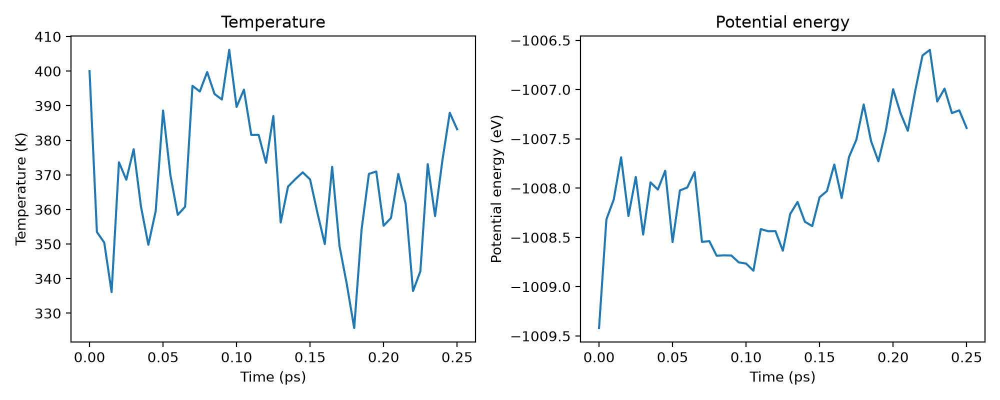
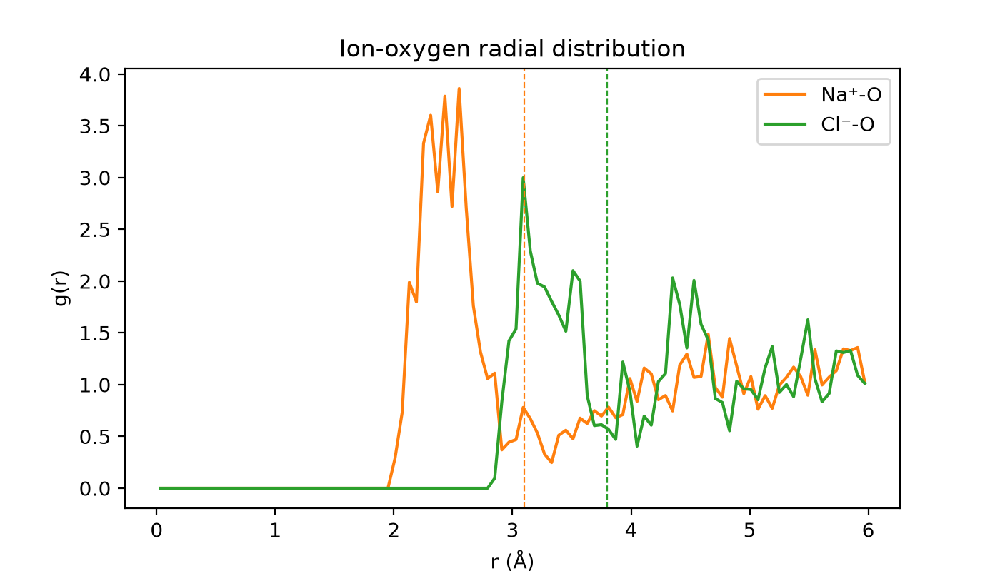
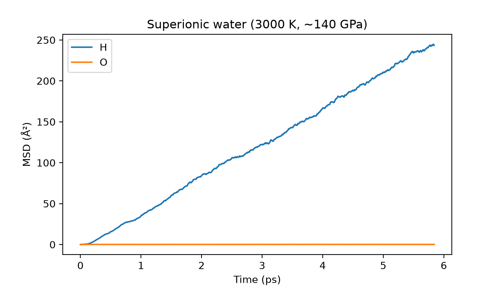

Note
Go to the end to download the full example code.
Introduction to foundational models for molecular dynamics¶
- Authors:
Paolo Pegolo @ppegolo
Foundational (or universal) machine-learning interatomic potentials are trained once on broad, chemically diverse datasets, with the goal of describing essentially any system without specific re-parameterization. This recipe illustrates the concept: we take a single foundational model, PET-MAD-XS (which spans 102 elements of the periodic table), and use it, unchanged, to run molecular dynamics on four qualitatively different aqueous systems:
pure liquid water
a NaCl aqueous solution
an ethanol-water mixture
superionic water, an exotic phase found deep inside the ice-giant planets
For each system we provide the LAMMPS input that drives a short constant-temperature
simulation through the metatomic pair style. The first three (water, NaCl,
ethanol-water) are light enough to run live; the fourth (superionic water) is more
demanding, so for it we analyze a pre-computed trajectory.
# sphinx_gallery_thumbnail_number = 3
Setup¶
We download a small archive with the data we need: the starting structures and the
pre-computed trajectory for the superionic system (the first three runs are launched
live below). The LAMMPS dump format stores the full cell information together with
unwrapped Cartesian coordinates (xu yu zu), which makes part of the analysis
below straightforward.
from zipfile import ZipFile
import numpy as np
import matplotlib.pyplot as plt
import ase.io
from ase.geometry.rdf import get_rdf
import chemiscope
import upet
from atomistic_cookbook_utils import download_with_retry, run_command
download_with_retry(
"https://github.com/ppegolo/labcosmo_ictp_school/raw/refs/heads/tmp/water-md.zip",
"data.zip",
)
with ZipFile("data.zip", "r") as z:
z.extractall(".")
PET-MAD-XS through metatomic¶
PET-MAD is a foundational
potential trained on the MAD (Massive Atomic Diversity) dataset, version 1.5, a deliberately heterogeneous collection
of structures spanning 102 elements. PET-MAD-XS (“extra small”) is the lightest
and fastest version: it trades some accuracy for speed, but the same recipe works
unchanged with the larger versions (S, M, L).
The model ships as a single file and is coupled to a simulation engine through metatomic, the software that exposes the same potential to several simulation engines, including i-PI, LAMMPS, gromacs, and ASE through a common API. In every LAMMPS input below the potential is loaded with a single line:
pair_style metatomic pet-mad-xs-v1.5.0.pt device cpu
(use device cuda to run on a GPU instead).
We fetch the model once with upet and save it to the file the LAMMPS inputs load
(pet-mad-xs-v1.5.0.pt); every run below picks it up through the metatomic pair
style.
model_path = "pet-mad-xs-v1.5.0.pt"
upet.save_upet(model="pet-mad", size="xs", version="1.5.0", output=model_path)
/home/runner/work/atomistic-cookbook/atomistic-cookbook/.nox/water-md/lib/python3.12/site-packages/metatrain/pet/model.py:1428: UserWarning: the 'non_conservative_forces' output name is deprecated, please update the model to use 'non_conservative_force' instead
return AtomisticModel(self.eval(), metadata, capabilities)
/home/runner/work/atomistic-cookbook/atomistic-cookbook/.nox/water-md/lib/python3.12/site-packages/metatrain/pet/model.py:1428: UserWarning: the 'non_conservative_forces' output name is deprecated, please update the model to use 'non_conservative_force' instead
return AtomisticModel(self.eval(), metadata, capabilities)
/home/runner/work/atomistic-cookbook/atomistic-cookbook/.nox/water-md/lib/python3.12/site-packages/metatrain/llpr/model.py:999: UserWarning: the 'non_conservative_forces' output name is deprecated, please update the model to use 'non_conservative_force' instead
return AtomisticModel(self.eval(), metadata, self.capabilities)
Liquid water at 400 K¶
We start with a simple case: 64 water molecules in a cubic, periodic box, propagated in the canonical (NVT) ensemble. This is the complete LAMMPS input:
# Liquid water NVT at 400 K with PET-MAD-xs
# Atom types: 1=H, 2=O
units metal
atom_style atomic
variable seed index 12345
variable t_target equal 400.0
variable tdamp equal 100*dt # thermostat time constant
variable nsteps equal 500 # 500 * 0.5 fs = 0.25 ps
variable dump_every equal 10
read_data data/water.data
pair_style metatomic pet-mad-xs-v1.5.0.pt device cpu
pair_coeff * * 1 8
timestep 0.0005
neighbor 2.0 bin
neigh_modify one 50000 page 500000
thermo_style custom step temp pe etotal press vol
thermo 10
velocity all create ${t_target} ${seed} mom yes rot yes dist gaussian
reset_timestep 0
fix nve_int all nve
fix thermostat all temp/csvr ${t_target} ${t_target} ${tdamp} ${seed}
print "step temp pe etotal press vol" file water_thermo.out
fix thermofile all print ${dump_every} "$(step) $(temp) $(pe) $(etotal) $(press) $(vol)" append water_thermo.out
dump traj all custom ${dump_every} water_traj.lammpstrj id type element xu yu zu
dump_modify traj element H O sort id
run ${nsteps}
Several of these settings recur in every simulation below and are worth a closer look:
Potential and element map.
pair_style metatomicinstructs LAMMPS to use the metatomic model to compute forces; the singlepair_coeff * * 1 8line is the only chemistry-specific input, mapping LAMMPS atom type 1 to hydrogen (Z=1) and type 2 to oxygen (Z=8).Ensemble.
fix nvepropagates the equations of motion with the velocity-Verlet integrator, whilefix temp/csvradds a stochastic velocity-rescaling thermostat (the Bussi-Donadio-Parrinello, or CSVR, thermostat) on top. Together they sample the canonical ensemble. CSVR reproduces the exact canonical velocity distribution while disturbing the dynamics minimally, which makes it a very common choice, especially when one wants to compute dynamical observables.Thermostat coupling time.
tdamp = 100*dt(here 50 fs) sets how strongly the thermostat couples to the system: 100 times the integration time step is usually loose enough not to damp the physical motion we want to measure, tight enough to keep the temperature steady over the run.Timestep.
timestep 0.0005is 0.5 fs. The fastest motion is the O-H stretch (period ≈ 10 fs), so half a femtosecond samples it about twenty times per oscillation, enough for stable, accurate integration.Temperature. We run at 400 K rather than 300 K because the electronic-structure reference of the MAD dataset (the r2SCAN functional) overstructures liquid water and raises its melting point by a few tens of kelvin. Working slightly above ambient keeps the system liquid and accelerates sampling.
These runs are intentionally short, so they reproduce quickly, but long enough to show some structure and stable dynamics. The only precomputed trajectories are for superionic water, which requires shorter time-steps and longer dynamics.
Each input reads its starting structure from data/ and is launched with a single
command, which we run here:
run_command("lmp -in in_water_nvt.lmp", print_output=True)
LAMMPS (30 Mar 2026)
OMP_NUM_THREADS environment is not set. Defaulting to 1 thread.
using 1 OpenMP thread(s) per MPI task
Reading data file ...
orthogonal box = (0.73005488 0.73005488 0.73005488) to (13.254708 13.254708 13.254708)
1 by 1 by 1 MPI processor grid
reading atoms ...
192 atoms
reading velocities ...
192 velocities
read_data CPU = 0.001 seconds
This is an unamed model
=======================
Model authors
-------------
- Arslan Mazitov (arslan.mazitov@epfl.ch)
- Filippo Bigi
- Matthias Kellner
- Paolo Pegolo
- Davide Tisi
- Guillaume Fraux
- Sergey Pozdnyakov
- Philip Loche
- Michele Ceriotti (michele.ceriotti@epfl.ch)
Model references
----------------
Please cite the following references when using this model:
- about this specific model:
* https://doi.org/10.1038/s41467-025-65662-7
* https://arxiv.org/abs/2601.16195
- about the architecture of this model:
* LLPR (uncertainty method):
https://iopscience.iop.org/article/10.1088/2632-2153/ad805f
* LPR (if using per-atom uncertainty):
https://pubs.acs.org/doi/10.1021/acs.jctc.3c00704
* https://arxiv.org/abs/2305.19302v3
Found 'energy_uncertainty' output, we will check for atoms with high uncertainty on the energy predictions
Running simulation on cpu device with float32 data
step temp pe etotal press vol
CITE-CITE-CITE-CITE-CITE-CITE-CITE-CITE-CITE-CITE-CITE-CITE-CITE
Your simulation uses code contributions which should be cited:
- LLPR (uncertainty method): https://iopscience.iop.org/article/10.1088/2632-2153/ad805f
- LPR (if using per-atom uncertainty): https://pubs.acs.org/doi/10.1021/acs.jctc.3c00704
- https://arxiv.org/abs/2305.19302v3
- https://doi.org/10.1038/s41467-025-65662-7
- https://arxiv.org/abs/2601.16195
The log file lists these citations in BibTeX format.
CITE-CITE-CITE-CITE-CITE-CITE-CITE-CITE-CITE-CITE-CITE-CITE-CITE
Neighbor list info ...
update: every = 1 steps, delay = 0 steps, check = yes
max neighbors/atom: 50000, page size: 500000
master list distance cutoff = 17
ghost atom cutoff = 17
binsize = 8.5, bins = 2 2 2
1 neighbor lists, perpetual/occasional/extra = 1 0 0
(1) pair metatomic, perpetual
attributes: full, newton on, ghost
pair build: full/bin/ghost
stencil: full/ghost/bin/3d
bin: standard
Setting up Verlet run ...
Unit style : metal
Current step : 0
Time step : 0.0005
0 400.00000000000011369 -1009.419189453125 -999.54371437512497778 6880.8893166404195654 1964.7040162035737012
Per MPI rank memory allocation (min/avg/max) = 58.34 | 58.34 | 58.34 Mbytes
Step Temp PotEng TotEng Press Volume
0 400 -1009.4192 -999.54371 6880.8893 1964.704
10 353.47651704228621838 -1008.317138671875 -999.59026733510165741 -1875.0747547476373711 1964.7040162035737012
10 353.47652 -1008.3171 -999.59027 -1875.0748 1964.704
20 350.42526118922808109 -1008.11572265625 -999.46418282231036301 12577.696214923615116 1964.7040162035737012
20 350.42526 -1008.1157 -999.46418 12577.696 1964.704
30 336.10029358027765056 -1007.68682861328125 -999.38895343087995116 -3756.7306380415357125 1964.7040162035737012
30 336.10029 -1007.6868 -999.38895 -3756.7306 1964.704
40 373.63779902897624652 -1008.28289794921875 -999.0582710179452306 13656.738599784717735 1964.7040162035737012
40 373.6378 -1008.2829 -999.05827 13656.739 1964.704
50 368.59619499270314691 -1007.88623046875 -998.78607412500980445 -6488.2369818405431943 1964.7040162035737012
50 368.59619 -1007.8862 -998.78607 -6488.237 1964.704
60 377.42015385128718208 -1008.47088623046875 -999.15287792223546148 15124.603992178061162 1964.7040162035737012
60 377.42015 -1008.4709 -999.15288 15124.604 1964.704
70 360.77907713494340669 -1007.9412841796875 -999.03412221741257326 -5968.3865161187077319 1964.7040162035737012
70 360.77908 -1007.9413 -999.03412 -5968.3865 1964.704
80 349.77211222036402205 -1008.0147705078125 -999.37935606478345107 14524.10460780268113 1964.7040162035737012
80 349.77211 -1008.0148 -999.37936 14524.105 1964.704
90 359.54656427957723963 -1007.82354736328125 -998.94681452597251337 -4206.6791754665291592 1964.7040162035737012
90 359.54656 -1007.8235 -998.94681 -4206.6792 1964.704
100 388.60338108887668795 -1008.54681396484375 -998.95270645191942549 10931.287289211735697 1964.7040162035737012
100 388.60338 -1008.5468 -998.95271 10931.287 1964.704
110 369.89666982204443002 -1008.02325439453125 -998.89099103387422929 -2798.4245490489734038 1964.7040162035737012
110 369.89667 -1008.0233 -998.89099 -2798.4245 1964.704
120 358.43592005044348525 -1007.99346923828125 -999.1441567494858873 11552.537202612946203 1964.7040162035737012
120 358.43592 -1007.9935 -999.14416 11552.537 1964.704
130 360.78569658551026578 -1007.8367919921875 -998.92946660436484763 -2903.6940866614800143 1964.7040162035737012
130 360.7857 -1007.8368 -998.92947 -2903.6941 1964.704
140 395.74312275960033958 -1008.5455322265625 -998.77515386130664865 9687.1361470724295941 1964.7040162035737012
140 395.74312 -1008.5455 -998.77515 9687.1361 1964.704
150 394.10488397721894671 -1008.53729248046875 -998.80736008088092603 -2159.4053867230331889 1964.7040162035737012
150 394.10488 -1008.5373 -998.80736 -2159.4054 1964.704
160 399.73280927649642535 -1008.686279296875 -998.81740080720260266 8889.0456669168906956 1964.7040162035737012
160 399.73281 -1008.6863 -998.8174 8889.0457 1964.704
170 393.39213988767750152 -1008.6815185546875 -998.96918287133291869 -2420.655244741831666 1964.7040162035737012
170 393.39214 -1008.6815 -998.96918 -2420.6552 1964.704
180 391.78696427021071713 -1008.68365478515625 -999.01094878131686983 8432.5644287388422526 1964.7040162035737012
180 391.78696 -1008.6837 -999.01095 8432.5644 1964.704
190 406.13233101934434899 -1008.75274658203125 -998.72587229865234804 -1333.2790029594300449 1964.7040162035737012
190 406.13233 -1008.7527 -998.72587 -1333.279 1964.704
200 389.63262559905774651 -1008.76507568359375 -999.14555747439578681 7129.2924556062407646 1964.7040162035737012
200 389.63263 -1008.7651 -999.14556 7129.2925 1964.704
210 394.64220959214236473 -1008.83770751953125 -999.09450925564613044 74.684612559355301187 1964.7040162035737012
210 394.64221 -1008.8377 -999.09451 74.684613 1964.704
220 381.54891888868053229 -1008.4151611328125 -998.99521903400500378 5540.7683866713796306 1964.7040162035737012
220 381.54892 -1008.4152 -998.99522 5540.7684 1964.704
230 381.56088549056335069 -1008.437255859375 -999.01701832087087496 923.52599258440056929 1964.7040162035737012
230 381.56089 -1008.4373 -999.01702 923.52599 1964.704
240 373.48084479948704484 -1008.43597412109375 -999.21522218377447189 5090.8998140742405667 1964.7040162035737012
240 373.48084 -1008.436 -999.21522 5090.8998 1964.704
250 387.02674443378833757 -1008.63494873046875 -999.07976630753034897 1589.090427837579 1964.7040162035737012
250 387.02674 -1008.6349 -999.07977 1589.0904 1964.704
260 356.23117570026744261 -1008.2626953125 -999.46781506841341525 2719.2810563951807126 1964.7040162035737012
260 356.23118 -1008.2627 -999.46782 2719.2811 1964.704
270 366.61860290312029065 -1008.1405029296875 -999.08917073943518972 4083.9392191890901813 1964.7040162035737012
270 366.6186 -1008.1405 -999.08917 4083.9392 1964.704
280 368.7745289244882656 -1008.3409423828125 -999.23638320832503723 -1703.8403415270390724 1964.7040162035737012
280 368.77453 -1008.3409 -999.23638 -1703.8403 1964.704
290 370.7260101113769224 -1008.3848876953125 -999.2321490112592528 6642.1959102460823487 1964.7040162035737012
290 370.72601 -1008.3849 -999.23215 6642.1959 1964.704
300 368.68031874082220156 -1008.09234619140625 -998.99011294272099803 -3881.7594499035635636 1964.7040162035737012
300 368.68032 -1008.0923 -998.99011 -3881.7594 1964.704
310 358.98857772026195789 -1008.02972412109375 -999.16676723968600982 7507.4979384823018336 1964.7040162035737012
310 358.98858 -1008.0297 -999.16677 7507.4979 1964.704
320 349.98107078390506786 -1007.76055908203125 -999.11998572628567672 -6354.8570109430056618 1964.7040162035737012
320 349.98107 -1007.7606 -999.11999 -6354.857 1964.704
330 372.33028881982994562 -1008.1002197265625 -998.90787350650055032 9368.22724772167021 1964.7040162035737012
330 372.33029 -1008.1002 -998.90787 9368.2272 1964.704
340 349.4363975839670502 -1007.68450927734375 -999.05738318812734633 -6739.7005871837309314 1964.7040162035737012
340 349.4364 -1007.6845 -999.05738 -6739.7006 1964.704
350 338.32737475736126953 -1007.50921630859375 -999.15635741454002527 9455.7475105116645864 1964.7040162035737012
350 338.32737 -1007.5092 -999.15636 9455.7475 1964.704
360 325.71414236325432512 -1007.151123046875 -999.10966830822383145 -4990.5895185085601042 1964.7040162035737012
360 325.71414 -1007.1511 -999.10967 -4990.5895 1964.704
370 354.15082672632399863 -1007.5224609375 -998.77894177952771315 7604.4731061163674894 1964.7040162035737012
370 354.15083 -1007.5225 -998.77894 7604.4731 1964.704
380 370.26901514878318267 -1007.7275390625 -998.58608298435649431 -3773.9044114466914834 1964.7040162035737012
380 370.26902 -1007.7275 -998.58608 -3773.9044 1964.704
390 370.98210210184447533 -1007.41815185546875 -998.25909059624166275 2424.2310780866000641 1964.7040162035737012
390 370.9821 -1007.4182 -998.25909 2424.2311 1964.704
400 355.28422006490575313 -1006.99615478515625 -998.22465363301216712 421.01171026473303982 1964.7040162035737012
400 355.28422 -1006.9962 -998.22465 421.01171 1964.704
410 357.52251349590210339 -1007.23785400390625 -998.41109232427447751 -949.62829458287410489 1964.7040162035737012
410 357.52251 -1007.2379 -998.41109 -949.62829 1964.704
420 370.23578682581705834 -1007.41839599609375 -998.27776028163850697 1959.2896983375728723 1964.7040162035737012
420 370.23579 -1007.4184 -998.27776 1959.2897 1964.704
430 361.60781194090708368 -1007.0162353515625 -998.08861301448109771 -4093.3953141659612811 1964.7040162035737012
430 361.60781 -1007.0162 -998.08861 -4093.3953 1964.704
440 336.39659300329282132 -1006.65399169921875 -998.34880127289841312 4009.3218864195482638 1964.7040162035737012
440 336.39659 -1006.654 -998.3488 4009.3219 1964.704
450 342.11691399495066435 -1006.59765625 -998.15123860520145627 -4112.2874841589537027 1964.7040162035737012
450 342.11691 -1006.5977 -998.15124 -4112.2875 1964.704
460 373.11301546670750895 -1007.12127685546875 -997.90960614167147469 3004.4482317826523285 1964.7040162035737012
460 373.11302 -1007.1213 -997.90961 3004.4482 1964.704
470 358.06870753412846398 -1006.990478515625 -998.15023202196266539 -5493.0767013468057485 1964.7040162035737012
470 358.06871 -1006.9905 -998.15023 -5493.0767 1964.704
480 374.20448333701318688 -1007.2386474609375 -998.00002983776118981 1193.969441958368634 1964.7040162035737012
480 374.20448 -1007.2386 -998.00003 1193.9694 1964.704
490 387.95734970059288571 -1007.2105712890625 -997.63241344332470817 -3981.1499893909021921 1964.7040162035737012
490 387.95735 -1007.2106 -997.63241 -3981.15 1964.704
500 383.19457213214161584 -1007.38958740234375 -997.92901628455410901 -254.50649855321393034 1964.7040162035737012
500 383.19457 -1007.3896 -997.92902 -254.5065 1964.704
Loop time of 122.097 on 1 procs for 500 steps with 192 atoms
Performance: 0.177 ns/day, 135.663 hours/ns, 4.095 timesteps/s, 786.263 atom-step/s
94.3% CPU use with 1 MPI tasks x 1 OpenMP threads
MPI task timing breakdown:
Section | min time | avg time | max time |%varavg| %total
---------------------------------------------------------------
Pair | 120.51 | 120.51 | 120.51 | 0.0 | 98.70
Neigh | 1.5351 | 1.5351 | 1.5351 | 0.0 | 1.26
Comm | 0.026408 | 0.026408 | 0.026408 | 0.0 | 0.02
Output | 0.0088239 | 0.0088239 | 0.0088239 | 0.0 | 0.01
Modify | 0.0078966 | 0.0078966 | 0.0078966 | 0.0 | 0.01
Other | | 0.003549 | | | 0.00
Nlocal: 192 ave 192 max 192 min
Histogram: 1 0 0 0 0 0 0 0 0 0
Nghost: 9642 ave 9642 max 9642 min
Histogram: 1 0 0 0 0 0 0 0 0 0
Neighs: 0 ave 0 max 0 min
Histogram: 1 0 0 0 0 0 0 0 0 0
FullNghs: 385200 ave 385200 max 385200 min
Histogram: 1 0 0 0 0 0 0 0 0 0
Total # of neighbors = 385200
Ave neighs/atom = 2006.25
Neighbor list builds = 8
Dangerous builds = 0
Total wall time: 0:02:03
CompletedProcess(args=['lmp', '-in', 'in_water_nvt.lmp'], returncode=0, stdout="LAMMPS (30 Mar 2026)\nOMP_NUM_THREADS environment is not set. Defaulting to 1 thread.\n using 1 OpenMP thread(s) per MPI task\nReading data file ...\n orthogonal box = (0.73005488 0.73005488 0.73005488) to (13.254708 13.254708 13.254708)\n 1 by 1 by 1 MPI processor grid\n reading atoms ...\n 192 atoms\n reading velocities ...\n 192 velocities\n read_data CPU = 0.001 seconds\n\nThis is an unamed model\n=======================\n\nModel authors\n-------------\n\n- Arslan Mazitov (arslan.mazitov@epfl.ch)\n- Filippo Bigi\n- Matthias Kellner\n- Paolo Pegolo\n- Davide Tisi\n- Guillaume Fraux\n- Sergey Pozdnyakov\n- Philip Loche\n- Michele Ceriotti (michele.ceriotti@epfl.ch)\n\nModel references\n----------------\n\nPlease cite the following references when using this model:\n- about this specific model:\n * https://doi.org/10.1038/s41467-025-65662-7\n * https://arxiv.org/abs/2601.16195\n- about the architecture of this model:\n * LLPR (uncertainty method):\n https://iopscience.iop.org/article/10.1088/2632-2153/ad805f\n * LPR (if using per-atom uncertainty):\n https://pubs.acs.org/doi/10.1021/acs.jctc.3c00704\n * https://arxiv.org/abs/2305.19302v3\n\nFound 'energy_uncertainty' output, we will check for atoms with high uncertainty on the energy predictions\nRunning simulation on cpu device with float32 data\nstep temp pe etotal press vol\n\nCITE-CITE-CITE-CITE-CITE-CITE-CITE-CITE-CITE-CITE-CITE-CITE-CITE\n\nYour simulation uses code contributions which should be cited:\n- LLPR (uncertainty method): https://iopscience.iop.org/article/10.1088/2632-2153/ad805f\n- LPR (if using per-atom uncertainty): https://pubs.acs.org/doi/10.1021/acs.jctc.3c00704\n- https://arxiv.org/abs/2305.19302v3\n- https://doi.org/10.1038/s41467-025-65662-7\n- https://arxiv.org/abs/2601.16195\nThe log file lists these citations in BibTeX format.\n\nCITE-CITE-CITE-CITE-CITE-CITE-CITE-CITE-CITE-CITE-CITE-CITE-CITE\n\nNeighbor list info ...\n update: every = 1 steps, delay = 0 steps, check = yes\n max neighbors/atom: 50000, page size: 500000\n master list distance cutoff = 17\n ghost atom cutoff = 17\n binsize = 8.5, bins = 2 2 2\n 1 neighbor lists, perpetual/occasional/extra = 1 0 0\n (1) pair metatomic, perpetual\n attributes: full, newton on, ghost\n pair build: full/bin/ghost\n stencil: full/ghost/bin/3d\n bin: standard\nSetting up Verlet run ...\n Unit style : metal\n Current step : 0\n Time step : 0.0005\n0 400.00000000000011369 -1009.419189453125 -999.54371437512497778 6880.8893166404195654 1964.7040162035737012\nPer MPI rank memory allocation (min/avg/max) = 58.34 | 58.34 | 58.34 Mbytes\n Step Temp PotEng TotEng Press Volume \n 0 400 -1009.4192 -999.54371 6880.8893 1964.704 \n10 353.47651704228621838 -1008.317138671875 -999.59026733510165741 -1875.0747547476373711 1964.7040162035737012\n 10 353.47652 -1008.3171 -999.59027 -1875.0748 1964.704 \n20 350.42526118922808109 -1008.11572265625 -999.46418282231036301 12577.696214923615116 1964.7040162035737012\n 20 350.42526 -1008.1157 -999.46418 12577.696 1964.704 \n30 336.10029358027765056 -1007.68682861328125 -999.38895343087995116 -3756.7306380415357125 1964.7040162035737012\n 30 336.10029 -1007.6868 -999.38895 -3756.7306 1964.704 \n40 373.63779902897624652 -1008.28289794921875 -999.0582710179452306 13656.738599784717735 1964.7040162035737012\n 40 373.6378 -1008.2829 -999.05827 13656.739 1964.704 \n50 368.59619499270314691 -1007.88623046875 -998.78607412500980445 -6488.2369818405431943 1964.7040162035737012\n 50 368.59619 -1007.8862 -998.78607 -6488.237 1964.704 \n60 377.42015385128718208 -1008.47088623046875 -999.15287792223546148 15124.603992178061162 1964.7040162035737012\n 60 377.42015 -1008.4709 -999.15288 15124.604 1964.704 \n70 360.77907713494340669 -1007.9412841796875 -999.03412221741257326 -5968.3865161187077319 1964.7040162035737012\n 70 360.77908 -1007.9413 -999.03412 -5968.3865 1964.704 \n80 349.77211222036402205 -1008.0147705078125 -999.37935606478345107 14524.10460780268113 1964.7040162035737012\n 80 349.77211 -1008.0148 -999.37936 14524.105 1964.704 \n90 359.54656427957723963 -1007.82354736328125 -998.94681452597251337 -4206.6791754665291592 1964.7040162035737012\n 90 359.54656 -1007.8235 -998.94681 -4206.6792 1964.704 \n100 388.60338108887668795 -1008.54681396484375 -998.95270645191942549 10931.287289211735697 1964.7040162035737012\n 100 388.60338 -1008.5468 -998.95271 10931.287 1964.704 \n110 369.89666982204443002 -1008.02325439453125 -998.89099103387422929 -2798.4245490489734038 1964.7040162035737012\n 110 369.89667 -1008.0233 -998.89099 -2798.4245 1964.704 \n120 358.43592005044348525 -1007.99346923828125 -999.1441567494858873 11552.537202612946203 1964.7040162035737012\n 120 358.43592 -1007.9935 -999.14416 11552.537 1964.704 \n130 360.78569658551026578 -1007.8367919921875 -998.92946660436484763 -2903.6940866614800143 1964.7040162035737012\n 130 360.7857 -1007.8368 -998.92947 -2903.6941 1964.704 \n140 395.74312275960033958 -1008.5455322265625 -998.77515386130664865 9687.1361470724295941 1964.7040162035737012\n 140 395.74312 -1008.5455 -998.77515 9687.1361 1964.704 \n150 394.10488397721894671 -1008.53729248046875 -998.80736008088092603 -2159.4053867230331889 1964.7040162035737012\n 150 394.10488 -1008.5373 -998.80736 -2159.4054 1964.704 \n160 399.73280927649642535 -1008.686279296875 -998.81740080720260266 8889.0456669168906956 1964.7040162035737012\n 160 399.73281 -1008.6863 -998.8174 8889.0457 1964.704 \n170 393.39213988767750152 -1008.6815185546875 -998.96918287133291869 -2420.655244741831666 1964.7040162035737012\n 170 393.39214 -1008.6815 -998.96918 -2420.6552 1964.704 \n180 391.78696427021071713 -1008.68365478515625 -999.01094878131686983 8432.5644287388422526 1964.7040162035737012\n 180 391.78696 -1008.6837 -999.01095 8432.5644 1964.704 \n190 406.13233101934434899 -1008.75274658203125 -998.72587229865234804 -1333.2790029594300449 1964.7040162035737012\n 190 406.13233 -1008.7527 -998.72587 -1333.279 1964.704 \n200 389.63262559905774651 -1008.76507568359375 -999.14555747439578681 7129.2924556062407646 1964.7040162035737012\n 200 389.63263 -1008.7651 -999.14556 7129.2925 1964.704 \n210 394.64220959214236473 -1008.83770751953125 -999.09450925564613044 74.684612559355301187 1964.7040162035737012\n 210 394.64221 -1008.8377 -999.09451 74.684613 1964.704 \n220 381.54891888868053229 -1008.4151611328125 -998.99521903400500378 5540.7683866713796306 1964.7040162035737012\n 220 381.54892 -1008.4152 -998.99522 5540.7684 1964.704 \n230 381.56088549056335069 -1008.437255859375 -999.01701832087087496 923.52599258440056929 1964.7040162035737012\n 230 381.56089 -1008.4373 -999.01702 923.52599 1964.704 \n240 373.48084479948704484 -1008.43597412109375 -999.21522218377447189 5090.8998140742405667 1964.7040162035737012\n 240 373.48084 -1008.436 -999.21522 5090.8998 1964.704 \n250 387.02674443378833757 -1008.63494873046875 -999.07976630753034897 1589.090427837579 1964.7040162035737012\n 250 387.02674 -1008.6349 -999.07977 1589.0904 1964.704 \n260 356.23117570026744261 -1008.2626953125 -999.46781506841341525 2719.2810563951807126 1964.7040162035737012\n 260 356.23118 -1008.2627 -999.46782 2719.2811 1964.704 \n270 366.61860290312029065 -1008.1405029296875 -999.08917073943518972 4083.9392191890901813 1964.7040162035737012\n 270 366.6186 -1008.1405 -999.08917 4083.9392 1964.704 \n280 368.7745289244882656 -1008.3409423828125 -999.23638320832503723 -1703.8403415270390724 1964.7040162035737012\n 280 368.77453 -1008.3409 -999.23638 -1703.8403 1964.704 \n290 370.7260101113769224 -1008.3848876953125 -999.2321490112592528 6642.1959102460823487 1964.7040162035737012\n 290 370.72601 -1008.3849 -999.23215 6642.1959 1964.704 \n300 368.68031874082220156 -1008.09234619140625 -998.99011294272099803 -3881.7594499035635636 1964.7040162035737012\n 300 368.68032 -1008.0923 -998.99011 -3881.7594 1964.704 \n310 358.98857772026195789 -1008.02972412109375 -999.16676723968600982 7507.4979384823018336 1964.7040162035737012\n 310 358.98858 -1008.0297 -999.16677 7507.4979 1964.704 \n320 349.98107078390506786 -1007.76055908203125 -999.11998572628567672 -6354.8570109430056618 1964.7040162035737012\n 320 349.98107 -1007.7606 -999.11999 -6354.857 1964.704 \n330 372.33028881982994562 -1008.1002197265625 -998.90787350650055032 9368.22724772167021 1964.7040162035737012\n 330 372.33029 -1008.1002 -998.90787 9368.2272 1964.704 \n340 349.4363975839670502 -1007.68450927734375 -999.05738318812734633 -6739.7005871837309314 1964.7040162035737012\n 340 349.4364 -1007.6845 -999.05738 -6739.7006 1964.704 \n350 338.32737475736126953 -1007.50921630859375 -999.15635741454002527 9455.7475105116645864 1964.7040162035737012\n 350 338.32737 -1007.5092 -999.15636 9455.7475 1964.704 \n360 325.71414236325432512 -1007.151123046875 -999.10966830822383145 -4990.5895185085601042 1964.7040162035737012\n 360 325.71414 -1007.1511 -999.10967 -4990.5895 1964.704 \n370 354.15082672632399863 -1007.5224609375 -998.77894177952771315 7604.4731061163674894 1964.7040162035737012\n 370 354.15083 -1007.5225 -998.77894 7604.4731 1964.704 \n380 370.26901514878318267 -1007.7275390625 -998.58608298435649431 -3773.9044114466914834 1964.7040162035737012\n 380 370.26902 -1007.7275 -998.58608 -3773.9044 1964.704 \n390 370.98210210184447533 -1007.41815185546875 -998.25909059624166275 2424.2310780866000641 1964.7040162035737012\n 390 370.9821 -1007.4182 -998.25909 2424.2311 1964.704 \n400 355.28422006490575313 -1006.99615478515625 -998.22465363301216712 421.01171026473303982 1964.7040162035737012\n 400 355.28422 -1006.9962 -998.22465 421.01171 1964.704 \n410 357.52251349590210339 -1007.23785400390625 -998.41109232427447751 -949.62829458287410489 1964.7040162035737012\n 410 357.52251 -1007.2379 -998.41109 -949.62829 1964.704 \n420 370.23578682581705834 -1007.41839599609375 -998.27776028163850697 1959.2896983375728723 1964.7040162035737012\n 420 370.23579 -1007.4184 -998.27776 1959.2897 1964.704 \n430 361.60781194090708368 -1007.0162353515625 -998.08861301448109771 -4093.3953141659612811 1964.7040162035737012\n 430 361.60781 -1007.0162 -998.08861 -4093.3953 1964.704 \n440 336.39659300329282132 -1006.65399169921875 -998.34880127289841312 4009.3218864195482638 1964.7040162035737012\n 440 336.39659 -1006.654 -998.3488 4009.3219 1964.704 \n450 342.11691399495066435 -1006.59765625 -998.15123860520145627 -4112.2874841589537027 1964.7040162035737012\n 450 342.11691 -1006.5977 -998.15124 -4112.2875 1964.704 \n460 373.11301546670750895 -1007.12127685546875 -997.90960614167147469 3004.4482317826523285 1964.7040162035737012\n 460 373.11302 -1007.1213 -997.90961 3004.4482 1964.704 \n470 358.06870753412846398 -1006.990478515625 -998.15023202196266539 -5493.0767013468057485 1964.7040162035737012\n 470 358.06871 -1006.9905 -998.15023 -5493.0767 1964.704 \n480 374.20448333701318688 -1007.2386474609375 -998.00002983776118981 1193.969441958368634 1964.7040162035737012\n 480 374.20448 -1007.2386 -998.00003 1193.9694 1964.704 \n490 387.95734970059288571 -1007.2105712890625 -997.63241344332470817 -3981.1499893909021921 1964.7040162035737012\n 490 387.95735 -1007.2106 -997.63241 -3981.15 1964.704 \n500 383.19457213214161584 -1007.38958740234375 -997.92901628455410901 -254.50649855321393034 1964.7040162035737012\n 500 383.19457 -1007.3896 -997.92902 -254.5065 1964.704 \nLoop time of 122.097 on 1 procs for 500 steps with 192 atoms\n\nPerformance: 0.177 ns/day, 135.663 hours/ns, 4.095 timesteps/s, 786.263 atom-step/s\n94.3% CPU use with 1 MPI tasks x 1 OpenMP threads\n\nMPI task timing breakdown:\nSection | min time | avg time | max time |%varavg| %total\n---------------------------------------------------------------\nPair | 120.51 | 120.51 | 120.51 | 0.0 | 98.70\nNeigh | 1.5351 | 1.5351 | 1.5351 | 0.0 | 1.26\nComm | 0.026408 | 0.026408 | 0.026408 | 0.0 | 0.02\nOutput | 0.0088239 | 0.0088239 | 0.0088239 | 0.0 | 0.01\nModify | 0.0078966 | 0.0078966 | 0.0078966 | 0.0 | 0.01\nOther | | 0.003549 | | | 0.00\n\nNlocal: 192 ave 192 max 192 min\nHistogram: 1 0 0 0 0 0 0 0 0 0\nNghost: 9642 ave 9642 max 9642 min\nHistogram: 1 0 0 0 0 0 0 0 0 0\nNeighs: 0 ave 0 max 0 min\nHistogram: 1 0 0 0 0 0 0 0 0 0\nFullNghs: 385200 ave 385200 max 385200 min\nHistogram: 1 0 0 0 0 0 0 0 0 0\n\nTotal # of neighbors = 385200\nAve neighs/atom = 2006.25\nNeighbor list builds = 8\nDangerous builds = 0\nTotal wall time: 0:02:03\n")
As a first sanity check we plot the temperature and potential energy along the trajectory: the thermostat should hold the temperature near its 400 K target (fluctuations are expected, given the small system). After a brief equilibration the potential energy should settle around a stable mean, with no long-term drift.
water_thermo = np.loadtxt("water_thermo.out", skiprows=1)
# columns: step temp pe etotal press vol
time_ps = water_thermo[:, 0] * 0.0005 # step × dt (0.5 fs) in ps
fig, axes = plt.subplots(1, 2, figsize=(10, 4), dpi=200)
axes[0].plot(time_ps, water_thermo[:, 1])
axes[0].set(xlabel="Time (ps)", ylabel="Temperature (K)", title="Temperature")
axes[1].plot(time_ps, water_thermo[:, 2])
axes[1].set(
xlabel="Time (ps)", ylabel="Potential energy (eV)", title="Potential energy"
)
fig.tight_layout()
plt.show()

We can also inspect the trajectory interactively. Water molecules diffuse and the hydrogen-bond network continuously rearranges.
water_traj = ase.io.read("water_traj.lammpstrj", ":", format="lammps-dump-text")
for frame in water_traj:
frame.wrap()
chemiscope.show(
structures=water_traj,
mode="structure",
settings=chemiscope.quick_settings(
trajectory=True,
structure_settings={"playbackDelay": 20, "unitCell": True},
),
)

Adding ions: NaCl in water¶
PET-MAD can handle in principle any stable chemical element. We start by dissolving
two NaCl units (two Na⁺ and two Cl⁻ ions) in 60 water molecules, a roughly 1.8 M
solution. The only change to the LAMMPS input is the element map: the pair_coeff
line now also assigns Na (Z=11) and Cl (Z=17). No new parameters and no retraining
are involved: the same weights describe ion-water and ion-ion interactions out of the
box.
# NaCl aqueous solution NVT at 400 K with PET-MAD-xs
# Atom types: 1=H, 2=O, 3=Na, 4=Cl
units metal
atom_style atomic
variable seed index 23456
variable t_target equal 400.0
variable tdamp equal 100*dt
variable nsteps equal 500 # 500 * 0.5 fs = 0.25 ps
variable dump_every equal 10
read_data data/nacl.data
pair_style metatomic pet-mad-xs-v1.5.0.pt device cpu
pair_coeff * * 1 8 11 17
timestep 0.0005
neighbor 2.0 bin
neigh_modify one 50000 page 500000
thermo_style custom step temp pe etotal press vol
thermo 10
velocity all create ${t_target} ${seed} mom yes rot yes dist gaussian
reset_timestep 0
fix nve_int all nve
fix thermostat all temp/csvr ${t_target} ${t_target} ${tdamp} ${seed}
print "step temp pe etotal press vol" file nacl_thermo.out
fix thermofile all print ${dump_every} "$(step) $(temp) $(pe) $(etotal) $(press) $(vol)" append nacl_thermo.out
dump traj all custom ${dump_every} nacl_traj.lammpstrj id type element xu yu zu
dump_modify traj element H O Na Cl sort id
run ${nsteps}
run_command("lmp -in in_nacl_nvt.lmp", print_output=True)
LAMMPS (30 Mar 2026)
OMP_NUM_THREADS environment is not set. Defaulting to 1 thread.
using 1 OpenMP thread(s) per MPI task
Reading data file ...
orthogonal box = (0.95507965 0.95507965 0.95507965) to (13.141811 13.141811 13.141811)
1 by 1 by 1 MPI processor grid
reading atoms ...
184 atoms
reading velocities ...
184 velocities
read_data CPU = 0.001 seconds
This is an unamed model
=======================
Model authors
-------------
- Arslan Mazitov (arslan.mazitov@epfl.ch)
- Filippo Bigi
- Matthias Kellner
- Paolo Pegolo
- Davide Tisi
- Guillaume Fraux
- Sergey Pozdnyakov
- Philip Loche
- Michele Ceriotti (michele.ceriotti@epfl.ch)
Model references
----------------
Please cite the following references when using this model:
- about this specific model:
* https://doi.org/10.1038/s41467-025-65662-7
* https://arxiv.org/abs/2601.16195
- about the architecture of this model:
* LLPR (uncertainty method):
https://iopscience.iop.org/article/10.1088/2632-2153/ad805f
* LPR (if using per-atom uncertainty):
https://pubs.acs.org/doi/10.1021/acs.jctc.3c00704
* https://arxiv.org/abs/2305.19302v3
Found 'energy_uncertainty' output, we will check for atoms with high uncertainty on the energy predictions
Running simulation on cpu device with float32 data
step temp pe etotal press vol
CITE-CITE-CITE-CITE-CITE-CITE-CITE-CITE-CITE-CITE-CITE-CITE-CITE
Your simulation uses code contributions which should be cited:
- LLPR (uncertainty method): https://iopscience.iop.org/article/10.1088/2632-2153/ad805f
- LPR (if using per-atom uncertainty): https://pubs.acs.org/doi/10.1021/acs.jctc.3c00704
- https://arxiv.org/abs/2305.19302v3
- https://doi.org/10.1038/s41467-025-65662-7
- https://arxiv.org/abs/2601.16195
The log file lists these citations in BibTeX format.
CITE-CITE-CITE-CITE-CITE-CITE-CITE-CITE-CITE-CITE-CITE-CITE-CITE
Neighbor list info ...
update: every = 1 steps, delay = 0 steps, check = yes
max neighbors/atom: 50000, page size: 500000
master list distance cutoff = 17
ghost atom cutoff = 17
binsize = 8.5, bins = 2 2 2
1 neighbor lists, perpetual/occasional/extra = 1 0 0
(1) pair metatomic, perpetual
attributes: full, newton on, ghost
pair build: full/bin/ghost
stencil: full/ghost/bin/3d
bin: standard
Setting up Verlet run ...
Unit style : metal
Current step : 0
Time step : 0.0005
0 400.0000000000003979 -959.44195556640625 -949.98011295240621621 6335.7653656896145549 1809.9298793830914747
Per MPI rank memory allocation (min/avg/max) = 60.24 | 60.24 | 60.24 Mbytes
Step Temp PotEng TotEng Press Volume
0 400 -959.44196 -949.98011 6335.7654 1809.9299
10 357.76268885138580345 -958.8070068359375 -950.34427119825431873 -4157.8675979950412511 1809.9298793830914747
10 357.76269 -958.80701 -950.34427 -4157.8676 1809.9299
20 368.23148452530375607 -958.78961181640625 -950.07924093616122718 6893.202955375354577 1809.9298793830914747
20 368.23148 -958.78961 -950.07924 6893.203 1809.9299
30 377.54366693524468701 -958.9130859375 -949.98243904636569823 -3363.3806288703694918 1809.9298793830914747
30 377.54367 -958.91309 -949.98244 -3363.3806 1809.9299
40 401.97244610694502853 -959.4512939453125 -949.94279389474127129 3892.0919356803506162 1809.9298793830914747
40 401.97245 -959.45129 -949.94279 3892.0919 1809.9299
50 390.11839834147264128 -958.84747314453125 -949.61937592969934485 -3125.8255497952027326 1809.9298793830914747
50 390.1184 -958.84747 -949.61938 -3125.8255 1809.9299
60 386.20368051278245503 -958.65234375 -949.51684764510127934 4062.079536735300735 1809.9298793830914747
60 386.20368 -958.65234 -949.51685 4062.0795 1809.9299
70 353.71201937407374771 -958.3236083984375 -949.95668975344347018 864.95686773854470175 1809.9298793830914747
70 353.71202 -958.32361 -949.95669 864.95687 1809.9299
80 359.76792355880058949 -958.33544921875 -949.82528054305259957 1907.9154983184967023 1809.9298793830914747
80 359.76792 -958.33545 -949.82528 1907.9155 1809.9299
90 352.06669091213814227 -957.8079833984375 -949.47998435083138702 3620.8375052742212574 1809.9298793830914747
90 352.06669 -957.80798 -949.47998 3620.8375 1809.9299
100 358.18233531772801825 -958.34326171875 -949.87059950902175842 2566.4447597638040861 1809.9298793830914747
100 358.18234 -958.34326 -949.8706 2566.4448 1809.9299
110 363.88335973059326989 -958.43194580078125 -949.82442810172017289 1235.0503972665576384 1809.9298793830914747
110 363.88336 -958.43195 -949.82443 1235.0504 1809.9299
120 373.82338732697922978 -958.70703125 -949.86438610919935854 2094.6651443932155416 1809.9298793830914747
120 373.82339 -958.70703 -949.86439 2094.6651 1809.9299
130 368.08459896894493113 -958.3759765625 -949.66908020229629983 -378.18506511810915072 1809.9298793830914747
130 368.0846 -958.37598 -949.66908 -378.18507 1809.9299
140 368.27424484344311395 -958.5618896484375 -949.85050728969156353 3698.5646401760650406 1809.9298793830914747
140 368.27424 -958.56189 -949.85051 3698.5646 1809.9299
150 363.86410283017750089 -958.3436279296875 -949.73656574502888361 -1021.4846163757805471 1809.9298793830914747
150 363.8641 -958.34363 -949.73657 -1021.4846 1809.9299
160 376.88493593973430507 -958.6251220703125 -949.71005720168943753 3817.7551127259998793 1809.9298793830914747
160 376.88494 -958.62512 -949.71006 3817.7551 1809.9299
170 370.0174649532125386 -958.2957763671875 -949.5431588226410895 -1560.130516865309346 1809.9298793830914747
170 370.01746 -958.29578 -949.54316 -1560.1305 1809.9299
180 375.20716318272098988 -958.2528076171875 -949.37742980298673956 7268.692676558367566 1809.9298793830914747
180 375.20716 -958.25281 -949.37743 7268.6927 1809.9299
190 368.71595111879321394 -958.04571533203125 -949.32388458513787555 -1773.5383500870946136 1809.9298793830914747
190 368.71595 -958.04572 -949.32388 -1773.5384 1809.9299
200 395.5174250626206458 -958.24554443359375 -948.88973536600110492 7414.0037935126047159 1809.9298793830914747
200 395.51743 -958.24554 -948.88974 7414.0038 1809.9299
210 408.67882141401332774 -958.3060302734375 -948.6388935537014504 -5245.7317600970382045 1809.9298793830914747
210 408.67882 -958.30603 -948.63889 -5245.7318 1809.9299
220 390.90963274168814223 -958.05902099609375 -948.81220744284780722 9910.8310189688218088 1809.9298793830914747
220 390.90963 -958.05902 -948.81221 9910.831 1809.9299
230 364.84053038627706655 -957.48834228515625 -948.85818309084811517 -2397.7041688388576404 1809.9298793830914747
230 364.84053 -957.48834 -948.85818 -2397.7042 1809.9299
240 386.76953540021253275 -957.663330078125 -948.51444889850824893 8077.2210816984315898 1809.9298793830914747
240 386.76954 -957.66333 -948.51445 8077.2211 1809.9299
250 370.72944847056328399 -957.7017822265625 -948.93232299205374147 -2306.7084559224335862 1809.9298793830914747
250 370.72945 -957.70178 -948.93232 -2306.7085 1809.9299
260 383.43216476974174611 -958.25836181640625 -949.18842482591469434 6073.411405093635949 1809.9298793830914747
260 383.43216 -958.25836 -949.18842 6073.4114 1809.9299
270 373.25483952433205559 -958.096923828125 -949.26772746189237751 507.75667484810213637 1809.9298793830914747
270 373.25484 -958.09692 -949.26773 507.75667 1809.9299
280 368.81322100846415424 -958.204345703125 -949.48021407526380244 2777.2289395598063493 1809.9298793830914747
280 368.81322 -958.20435 -949.48021 2777.2289 1809.9299
290 376.21754702561850081 -958.04461669921875 -949.14533865276484903 1492.5170730321806332 1809.9298793830914747
290 376.21755 -958.04462 -949.14534 1492.5171 1809.9299
300 374.30596430892376247 -958.2183837890625 -949.36432347963113898 -645.42140044262328047 1809.9298793830914747
300 374.30596 -958.21838 -949.36432 -645.4214 1809.9299
310 361.44480642632510126 -958.01593017578125 -949.46609549564732333 3105.3038546883904019 1809.9298793830914747
310 361.44481 -958.01593 -949.4661 3105.3039 1809.9299
320 349.8062423691151821 -957.97344970703125 -949.69892068030299015 -379.22070055109435316 1809.9298793830914747
320 349.80624 -957.97345 -949.69892 -379.2207 1809.9299
330 355.28189997813245782 -957.98529052734375 -949.58123697435382837 1854.8533087609212089 1809.9298793830914747
330 355.2819 -957.98529 -949.58124 1854.8533 1809.9299
340 381.02051870415056101 -958.40716552734375 -949.39427507563550535 -840.04773682758366249 1809.9298793830914747
340 381.02052 -958.40717 -949.39428 -840.04774 1809.9299
350 373.81623610913248967 -957.98480224609375 -949.14232626453758712 2729.8787257485464579 1809.9298793830914747
350 373.81624 -957.9848 -949.14233 2729.8787 1809.9299
360 386.35531844059318018 -958.3848876953125 -949.2458046548956645 911.97891856632804775 1809.9298793830914747
360 386.35532 -958.38489 -949.2458 911.97892 1809.9299
370 366.83505415922735438 -958.50286865234375 -949.82552978296178026 -2075.5344381264731055 1809.9298793830914747
370 366.83505 -958.50287 -949.82553 -2075.5344 1809.9299
380 380.42122823644842811 -958.48736572265625 -949.48865125116162744 4382.2509389132264914 1809.9298793830914747
380 380.42123 -958.48737 -949.48865 4382.2509 1809.9299
390 347.34656671356958668 -957.69525146484375 -949.47890509795115577 -2457.0561490250029237 1809.9298793830914747
390 347.34657 -957.69525 -949.47891 -2457.0561 1809.9299
400 352.97601610318207577 -957.917236328125 -949.56772755091242288 7866.5207346277329634 1809.9298793830914747
400 352.97602 -957.91724 -949.56773 7866.5207 1809.9299
410 353.10643363417523233 -957.73779296875 -949.38519921615647945 -4990.2443148569045661 1809.9298793830914747
410 353.10643 -957.73779 -949.3852 -4990.2443 1809.9299
420 369.1292271584604805 -958.27557373046875 -949.54396710146670557 8735.2861988993190607 1809.9298793830914747
420 369.12923 -958.27557 -949.54397 8735.2862 1809.9299
430 341.24745306105143072 -957.774658203125 -949.70258396989493122 -5313.1583883915454862 1809.9298793830914747
430 341.24745 -957.77466 -949.70258 -5313.1584 1809.9299
440 338.93620094429735445 -957.77581787109375 -949.75841539728867247 10913.185288578086329 1809.9298793830914747
440 338.9362 -957.77582 -949.75842 10913.185 1809.9299
450 347.03446875008876304 -957.72900390625 -949.52004009388394934 -5333.9114452494313809 1809.9298793830914747
450 347.03447 -957.729 -949.52004 -5333.9114 1809.9299
460 356.21740294095076251 -957.97454833984375 -949.54836583235601211 8940.3607567087601637 1809.9298793830914747
460 356.2174 -957.97455 -949.54837 8940.3608 1809.9299
470 370.31724545501037937 -958.2576904296875 -949.49798169532425618 -3376.4797020840783262 1809.9298793830914747
470 370.31725 -958.25769 -949.49798 -3376.4797 1809.9299
480 366.28795255017922727 -958.01123046875 -949.3468330726647082 6831.3247616211456261 1809.9298793830914747
480 366.28795 -958.01123 -949.34683 6831.3248 1809.9299
490 366.21289340844958815 -957.998779296875 -949.33615739525419031 -1089.3815647078545226 1809.9298793830914747
490 366.21289 -957.99878 -949.33616 -1089.3816 1809.9299
500 365.27122514407039944 -958.09686279296875 -949.4565156836283677 4678.2324080066373426 1809.9298793830914747
500 365.27123 -958.09686 -949.45652 4678.2324 1809.9299
Loop time of 120.841 on 1 procs for 500 steps with 184 atoms
Performance: 0.179 ns/day, 134.267 hours/ns, 4.138 timesteps/s, 761.333 atom-step/s
95.5% CPU use with 1 MPI tasks x 1 OpenMP threads
MPI task timing breakdown:
Section | min time | avg time | max time |%varavg| %total
---------------------------------------------------------------
Pair | 119.44 | 119.44 | 119.44 | 0.0 | 98.84
Neigh | 1.3528 | 1.3528 | 1.3528 | 0.0 | 1.12
Comm | 0.026108 | 0.026108 | 0.026108 | 0.0 | 0.02
Output | 0.0080662 | 0.0080662 | 0.0080662 | 0.0 | 0.01
Modify | 0.0081261 | 0.0081261 | 0.0081261 | 0.0 | 0.01
Other | | 0.00398 | | | 0.00
Nlocal: 184 ave 184 max 184 min
Histogram: 1 0 0 0 0 0 0 0 0 0
Nghost: 9765 ave 9765 max 9765 min
Histogram: 1 0 0 0 0 0 0 0 0 0
Neighs: 0 ave 0 max 0 min
Histogram: 1 0 0 0 0 0 0 0 0 0
FullNghs: 383610 ave 383610 max 383610 min
Histogram: 1 0 0 0 0 0 0 0 0 0
Total # of neighbors = 383610
Ave neighs/atom = 2084.837
Neighbor list builds = 7
Dangerous builds = 0
Total wall time: 0:02:02
CompletedProcess(args=['lmp', '-in', 'in_nacl_nvt.lmp'], returncode=0, stdout="LAMMPS (30 Mar 2026)\nOMP_NUM_THREADS environment is not set. Defaulting to 1 thread.\n using 1 OpenMP thread(s) per MPI task\nReading data file ...\n orthogonal box = (0.95507965 0.95507965 0.95507965) to (13.141811 13.141811 13.141811)\n 1 by 1 by 1 MPI processor grid\n reading atoms ...\n 184 atoms\n reading velocities ...\n 184 velocities\n read_data CPU = 0.001 seconds\n\nThis is an unamed model\n=======================\n\nModel authors\n-------------\n\n- Arslan Mazitov (arslan.mazitov@epfl.ch)\n- Filippo Bigi\n- Matthias Kellner\n- Paolo Pegolo\n- Davide Tisi\n- Guillaume Fraux\n- Sergey Pozdnyakov\n- Philip Loche\n- Michele Ceriotti (michele.ceriotti@epfl.ch)\n\nModel references\n----------------\n\nPlease cite the following references when using this model:\n- about this specific model:\n * https://doi.org/10.1038/s41467-025-65662-7\n * https://arxiv.org/abs/2601.16195\n- about the architecture of this model:\n * LLPR (uncertainty method):\n https://iopscience.iop.org/article/10.1088/2632-2153/ad805f\n * LPR (if using per-atom uncertainty):\n https://pubs.acs.org/doi/10.1021/acs.jctc.3c00704\n * https://arxiv.org/abs/2305.19302v3\n\nFound 'energy_uncertainty' output, we will check for atoms with high uncertainty on the energy predictions\nRunning simulation on cpu device with float32 data\nstep temp pe etotal press vol\n\nCITE-CITE-CITE-CITE-CITE-CITE-CITE-CITE-CITE-CITE-CITE-CITE-CITE\n\nYour simulation uses code contributions which should be cited:\n- LLPR (uncertainty method): https://iopscience.iop.org/article/10.1088/2632-2153/ad805f\n- LPR (if using per-atom uncertainty): https://pubs.acs.org/doi/10.1021/acs.jctc.3c00704\n- https://arxiv.org/abs/2305.19302v3\n- https://doi.org/10.1038/s41467-025-65662-7\n- https://arxiv.org/abs/2601.16195\nThe log file lists these citations in BibTeX format.\n\nCITE-CITE-CITE-CITE-CITE-CITE-CITE-CITE-CITE-CITE-CITE-CITE-CITE\n\nNeighbor list info ...\n update: every = 1 steps, delay = 0 steps, check = yes\n max neighbors/atom: 50000, page size: 500000\n master list distance cutoff = 17\n ghost atom cutoff = 17\n binsize = 8.5, bins = 2 2 2\n 1 neighbor lists, perpetual/occasional/extra = 1 0 0\n (1) pair metatomic, perpetual\n attributes: full, newton on, ghost\n pair build: full/bin/ghost\n stencil: full/ghost/bin/3d\n bin: standard\nSetting up Verlet run ...\n Unit style : metal\n Current step : 0\n Time step : 0.0005\n0 400.0000000000003979 -959.44195556640625 -949.98011295240621621 6335.7653656896145549 1809.9298793830914747\nPer MPI rank memory allocation (min/avg/max) = 60.24 | 60.24 | 60.24 Mbytes\n Step Temp PotEng TotEng Press Volume \n 0 400 -959.44196 -949.98011 6335.7654 1809.9299 \n10 357.76268885138580345 -958.8070068359375 -950.34427119825431873 -4157.8675979950412511 1809.9298793830914747\n 10 357.76269 -958.80701 -950.34427 -4157.8676 1809.9299 \n20 368.23148452530375607 -958.78961181640625 -950.07924093616122718 6893.202955375354577 1809.9298793830914747\n 20 368.23148 -958.78961 -950.07924 6893.203 1809.9299 \n30 377.54366693524468701 -958.9130859375 -949.98243904636569823 -3363.3806288703694918 1809.9298793830914747\n 30 377.54367 -958.91309 -949.98244 -3363.3806 1809.9299 \n40 401.97244610694502853 -959.4512939453125 -949.94279389474127129 3892.0919356803506162 1809.9298793830914747\n 40 401.97245 -959.45129 -949.94279 3892.0919 1809.9299 \n50 390.11839834147264128 -958.84747314453125 -949.61937592969934485 -3125.8255497952027326 1809.9298793830914747\n 50 390.1184 -958.84747 -949.61938 -3125.8255 1809.9299 \n60 386.20368051278245503 -958.65234375 -949.51684764510127934 4062.079536735300735 1809.9298793830914747\n 60 386.20368 -958.65234 -949.51685 4062.0795 1809.9299 \n70 353.71201937407374771 -958.3236083984375 -949.95668975344347018 864.95686773854470175 1809.9298793830914747\n 70 353.71202 -958.32361 -949.95669 864.95687 1809.9299 \n80 359.76792355880058949 -958.33544921875 -949.82528054305259957 1907.9154983184967023 1809.9298793830914747\n 80 359.76792 -958.33545 -949.82528 1907.9155 1809.9299 \n90 352.06669091213814227 -957.8079833984375 -949.47998435083138702 3620.8375052742212574 1809.9298793830914747\n 90 352.06669 -957.80798 -949.47998 3620.8375 1809.9299 \n100 358.18233531772801825 -958.34326171875 -949.87059950902175842 2566.4447597638040861 1809.9298793830914747\n 100 358.18234 -958.34326 -949.8706 2566.4448 1809.9299 \n110 363.88335973059326989 -958.43194580078125 -949.82442810172017289 1235.0503972665576384 1809.9298793830914747\n 110 363.88336 -958.43195 -949.82443 1235.0504 1809.9299 \n120 373.82338732697922978 -958.70703125 -949.86438610919935854 2094.6651443932155416 1809.9298793830914747\n 120 373.82339 -958.70703 -949.86439 2094.6651 1809.9299 \n130 368.08459896894493113 -958.3759765625 -949.66908020229629983 -378.18506511810915072 1809.9298793830914747\n 130 368.0846 -958.37598 -949.66908 -378.18507 1809.9299 \n140 368.27424484344311395 -958.5618896484375 -949.85050728969156353 3698.5646401760650406 1809.9298793830914747\n 140 368.27424 -958.56189 -949.85051 3698.5646 1809.9299 \n150 363.86410283017750089 -958.3436279296875 -949.73656574502888361 -1021.4846163757805471 1809.9298793830914747\n 150 363.8641 -958.34363 -949.73657 -1021.4846 1809.9299 \n160 376.88493593973430507 -958.6251220703125 -949.71005720168943753 3817.7551127259998793 1809.9298793830914747\n 160 376.88494 -958.62512 -949.71006 3817.7551 1809.9299 \n170 370.0174649532125386 -958.2957763671875 -949.5431588226410895 -1560.130516865309346 1809.9298793830914747\n 170 370.01746 -958.29578 -949.54316 -1560.1305 1809.9299 \n180 375.20716318272098988 -958.2528076171875 -949.37742980298673956 7268.692676558367566 1809.9298793830914747\n 180 375.20716 -958.25281 -949.37743 7268.6927 1809.9299 \n190 368.71595111879321394 -958.04571533203125 -949.32388458513787555 -1773.5383500870946136 1809.9298793830914747\n 190 368.71595 -958.04572 -949.32388 -1773.5384 1809.9299 \n200 395.5174250626206458 -958.24554443359375 -948.88973536600110492 7414.0037935126047159 1809.9298793830914747\n 200 395.51743 -958.24554 -948.88974 7414.0038 1809.9299 \n210 408.67882141401332774 -958.3060302734375 -948.6388935537014504 -5245.7317600970382045 1809.9298793830914747\n 210 408.67882 -958.30603 -948.63889 -5245.7318 1809.9299 \n220 390.90963274168814223 -958.05902099609375 -948.81220744284780722 9910.8310189688218088 1809.9298793830914747\n 220 390.90963 -958.05902 -948.81221 9910.831 1809.9299 \n230 364.84053038627706655 -957.48834228515625 -948.85818309084811517 -2397.7041688388576404 1809.9298793830914747\n 230 364.84053 -957.48834 -948.85818 -2397.7042 1809.9299 \n240 386.76953540021253275 -957.663330078125 -948.51444889850824893 8077.2210816984315898 1809.9298793830914747\n 240 386.76954 -957.66333 -948.51445 8077.2211 1809.9299 \n250 370.72944847056328399 -957.7017822265625 -948.93232299205374147 -2306.7084559224335862 1809.9298793830914747\n 250 370.72945 -957.70178 -948.93232 -2306.7085 1809.9299 \n260 383.43216476974174611 -958.25836181640625 -949.18842482591469434 6073.411405093635949 1809.9298793830914747\n 260 383.43216 -958.25836 -949.18842 6073.4114 1809.9299 \n270 373.25483952433205559 -958.096923828125 -949.26772746189237751 507.75667484810213637 1809.9298793830914747\n 270 373.25484 -958.09692 -949.26773 507.75667 1809.9299 \n280 368.81322100846415424 -958.204345703125 -949.48021407526380244 2777.2289395598063493 1809.9298793830914747\n 280 368.81322 -958.20435 -949.48021 2777.2289 1809.9299 \n290 376.21754702561850081 -958.04461669921875 -949.14533865276484903 1492.5170730321806332 1809.9298793830914747\n 290 376.21755 -958.04462 -949.14534 1492.5171 1809.9299 \n300 374.30596430892376247 -958.2183837890625 -949.36432347963113898 -645.42140044262328047 1809.9298793830914747\n 300 374.30596 -958.21838 -949.36432 -645.4214 1809.9299 \n310 361.44480642632510126 -958.01593017578125 -949.46609549564732333 3105.3038546883904019 1809.9298793830914747\n 310 361.44481 -958.01593 -949.4661 3105.3039 1809.9299 \n320 349.8062423691151821 -957.97344970703125 -949.69892068030299015 -379.22070055109435316 1809.9298793830914747\n 320 349.80624 -957.97345 -949.69892 -379.2207 1809.9299 \n330 355.28189997813245782 -957.98529052734375 -949.58123697435382837 1854.8533087609212089 1809.9298793830914747\n 330 355.2819 -957.98529 -949.58124 1854.8533 1809.9299 \n340 381.02051870415056101 -958.40716552734375 -949.39427507563550535 -840.04773682758366249 1809.9298793830914747\n 340 381.02052 -958.40717 -949.39428 -840.04774 1809.9299 \n350 373.81623610913248967 -957.98480224609375 -949.14232626453758712 2729.8787257485464579 1809.9298793830914747\n 350 373.81624 -957.9848 -949.14233 2729.8787 1809.9299 \n360 386.35531844059318018 -958.3848876953125 -949.2458046548956645 911.97891856632804775 1809.9298793830914747\n 360 386.35532 -958.38489 -949.2458 911.97892 1809.9299 \n370 366.83505415922735438 -958.50286865234375 -949.82552978296178026 -2075.5344381264731055 1809.9298793830914747\n 370 366.83505 -958.50287 -949.82553 -2075.5344 1809.9299 \n380 380.42122823644842811 -958.48736572265625 -949.48865125116162744 4382.2509389132264914 1809.9298793830914747\n 380 380.42123 -958.48737 -949.48865 4382.2509 1809.9299 \n390 347.34656671356958668 -957.69525146484375 -949.47890509795115577 -2457.0561490250029237 1809.9298793830914747\n 390 347.34657 -957.69525 -949.47891 -2457.0561 1809.9299 \n400 352.97601610318207577 -957.917236328125 -949.56772755091242288 7866.5207346277329634 1809.9298793830914747\n 400 352.97602 -957.91724 -949.56773 7866.5207 1809.9299 \n410 353.10643363417523233 -957.73779296875 -949.38519921615647945 -4990.2443148569045661 1809.9298793830914747\n 410 353.10643 -957.73779 -949.3852 -4990.2443 1809.9299 \n420 369.1292271584604805 -958.27557373046875 -949.54396710146670557 8735.2861988993190607 1809.9298793830914747\n 420 369.12923 -958.27557 -949.54397 8735.2862 1809.9299 \n430 341.24745306105143072 -957.774658203125 -949.70258396989493122 -5313.1583883915454862 1809.9298793830914747\n 430 341.24745 -957.77466 -949.70258 -5313.1584 1809.9299 \n440 338.93620094429735445 -957.77581787109375 -949.75841539728867247 10913.185288578086329 1809.9298793830914747\n 440 338.9362 -957.77582 -949.75842 10913.185 1809.9299 \n450 347.03446875008876304 -957.72900390625 -949.52004009388394934 -5333.9114452494313809 1809.9298793830914747\n 450 347.03447 -957.729 -949.52004 -5333.9114 1809.9299 \n460 356.21740294095076251 -957.97454833984375 -949.54836583235601211 8940.3607567087601637 1809.9298793830914747\n 460 356.2174 -957.97455 -949.54837 8940.3608 1809.9299 \n470 370.31724545501037937 -958.2576904296875 -949.49798169532425618 -3376.4797020840783262 1809.9298793830914747\n 470 370.31725 -958.25769 -949.49798 -3376.4797 1809.9299 \n480 366.28795255017922727 -958.01123046875 -949.3468330726647082 6831.3247616211456261 1809.9298793830914747\n 480 366.28795 -958.01123 -949.34683 6831.3248 1809.9299 \n490 366.21289340844958815 -957.998779296875 -949.33615739525419031 -1089.3815647078545226 1809.9298793830914747\n 490 366.21289 -957.99878 -949.33616 -1089.3816 1809.9299 \n500 365.27122514407039944 -958.09686279296875 -949.4565156836283677 4678.2324080066373426 1809.9298793830914747\n 500 365.27123 -958.09686 -949.45652 4678.2324 1809.9299 \nLoop time of 120.841 on 1 procs for 500 steps with 184 atoms\n\nPerformance: 0.179 ns/day, 134.267 hours/ns, 4.138 timesteps/s, 761.333 atom-step/s\n95.5% CPU use with 1 MPI tasks x 1 OpenMP threads\n\nMPI task timing breakdown:\nSection | min time | avg time | max time |%varavg| %total\n---------------------------------------------------------------\nPair | 119.44 | 119.44 | 119.44 | 0.0 | 98.84\nNeigh | 1.3528 | 1.3528 | 1.3528 | 0.0 | 1.12\nComm | 0.026108 | 0.026108 | 0.026108 | 0.0 | 0.02\nOutput | 0.0080662 | 0.0080662 | 0.0080662 | 0.0 | 0.01\nModify | 0.0081261 | 0.0081261 | 0.0081261 | 0.0 | 0.01\nOther | | 0.00398 | | | 0.00\n\nNlocal: 184 ave 184 max 184 min\nHistogram: 1 0 0 0 0 0 0 0 0 0\nNghost: 9765 ave 9765 max 9765 min\nHistogram: 1 0 0 0 0 0 0 0 0 0\nNeighs: 0 ave 0 max 0 min\nHistogram: 1 0 0 0 0 0 0 0 0 0\nFullNghs: 383610 ave 383610 max 383610 min\nHistogram: 1 0 0 0 0 0 0 0 0 0\n\nTotal # of neighbors = 383610\nAve neighs/atom = 2084.837\nNeighbor list builds = 7\nDangerous builds = 0\nTotal wall time: 0:02:02\n")
Does that hold up quantitatively? The standard structural probe of solvation is the ion-oxygen radial distribution function g(r): the density of water oxygens at a distance r from each ion, normalized to the bulk density. A tall first peak followed by a deep minimum is the fingerprint of a well-defined hydration shell, and that first minimum sets the shell radius.
nacl_traj = ase.io.read("nacl_traj.lammpstrj", ":", format="lammps-dump-text")
g_na = []
r_na = []
g_cl = []
r_cl = []
for frame in nacl_traj:
g_na_, r_na_ = get_rdf(frame, 6.0, 100, elements=["Na", "O"])
g_cl_, r_cl_ = get_rdf(frame, 6.0, 100, elements=["Cl", "O"])
g_na.append(g_na_)
r_na.append(r_na_)
g_cl.append(g_cl_)
r_cl.append(r_cl_)
g_na = np.array(g_na).mean(axis=0)
r_na = np.array(r_na).mean(axis=0)
g_cl = np.array(g_cl).mean(axis=0)
r_cl = np.array(r_cl).mean(axis=0)
fig, ax = plt.subplots(figsize=(7, 4), dpi=200)
ax.plot(r_na, g_na, color="tab:orange", label="Na⁺-O")
ax.plot(r_cl, g_cl, color="tab:green", label="Cl⁻-O")
ax.axvline(3.1, color="tab:orange", ls="--", lw=0.8)
ax.axvline(3.8, color="tab:green", ls="--", lw=0.8)
ax.set(xlabel="r (Å)", ylabel="g(r)", title="Ion-oxygen radial distribution")
ax.legend()
plt.show()

If sampled for longer, g(r) of both ions would show a structured first peak and a clear first minimum (dashed lines, near 3.1 Å for Na⁺ and 3.8 Å for Cl⁻). Counting the water oxygens inside those radii every frame gives a coordination number, which we attach to the trajectory and show on the map beside the structure below. It fluctuates around 5-6 for Na⁺ and about 7 for Cl⁻. The default chemiscope visualization shows the Na⁺ coordination as the y-axis, but you can switch to the Cl⁻ one with the dropdown menu.
def first_shell_count(
traj: list[ase.Atoms], ion: str, cutoff: float, other: str = "O"
) -> np.ndarray:
"""
Mean number of other atoms within cutoff of each ion.
:param traj: trajectory to analyze
:param ion: element symbol of the ion (e.g. "Na" or "Cl")
:param cutoff: shell radius in Å
:param other: element symbol of the other species (default: "O")
:return: array of shape (n_frames,) with the average count per ion at each frame
"""
sym = np.array(traj[0].get_chemical_symbols())
i_ion = np.where(sym == ion)[0]
i_other = np.where(sym == other)[0]
counts = []
for frame in traj:
d = frame.get_all_distances(mic=True)[i_ion, :][:, i_other]
counts.append((d < cutoff).sum(axis=1).mean())
return np.array(counts)
n_na = first_shell_count(nacl_traj, "Na", 3.1)
n_cl = first_shell_count(nacl_traj, "Cl", 3.8)
time_ps = np.arange(len(nacl_traj)) * 0.0005 * 10 # 0.5 fs step, dumped every 10
for frame in nacl_traj:
frame.wrap()
chemiscope.show(
structures=nacl_traj,
properties={
"time [ps]": {"target": "structure", "values": time_ps},
"Na+ first-shell waters": {"target": "structure", "values": n_na},
"Cl- first-shell waters": {"target": "structure", "values": n_cl},
},
mode="default",
settings=chemiscope.quick_settings(
trajectory=True,
x="time [ps]",
y="Na+ first-shell waters",
structure_settings={"playbackDelay": 20, "unitCell": True},
map_settings={"markerOutline": False},
),
)
An organic mixture: ethanol-water¶
Ethanol (C₂H₅OH) adds a third element, carbon. For LAMMPS this is simply a third
atom type, and the pair_coeff line grows by one entry to map C (Z=6). The model
handles the new C-H, C-C, C-O and carbon-water interactions with no extra input. This
kind of mixed organic/aqueous environment is common in chemistry, but can be tedious
to parameterize with traditional force fields.
# Ethanol-water mixture NVT at 400 K with PET-MAD-xs
# Atom types: 1=H, 2=O, 3=C
units metal
atom_style atomic
variable seed index 34567
variable t_target equal 400.0
variable tdamp equal 100*dt
variable nsteps equal 500 # 500 * 0.5 fs = 0.25 ps
variable dump_every equal 10
read_data data/ethanol_water.data
pair_style metatomic pet-mad-xs-v1.5.0.pt device cpu
pair_coeff * * 1 8 6
timestep 0.0005
neighbor 2.0 bin
neigh_modify one 50000 page 500000
thermo_style custom step temp pe etotal press vol
thermo 10
velocity all create ${t_target} ${seed} mom yes rot yes dist gaussian
reset_timestep 0
fix nve_int all nve
fix thermostat all temp/csvr ${t_target} ${t_target} ${tdamp} ${seed}
print "step temp pe etotal press vol" file ethanol_thermo.out
fix thermofile all print ${dump_every} "$(step) $(temp) $(pe) $(etotal) $(press) $(vol)" append ethanol_thermo.out
dump traj all custom ${dump_every} ethanol_traj.lammpstrj id type element xu yu zu
dump_modify traj element H O C sort id
run ${nsteps}
run_command("lmp -in in_ethanol_nvt.lmp", print_output=True)
LAMMPS (30 Mar 2026)
OMP_NUM_THREADS environment is not set. Defaulting to 1 thread.
using 1 OpenMP thread(s) per MPI task
Reading data file ...
orthogonal box = (0.56573683 0.56573683 0.56573683) to (13.499283 13.499283 13.499283)
1 by 1 by 1 MPI processor grid
reading atoms ...
192 atoms
reading velocities ...
192 velocities
read_data CPU = 0.001 seconds
This is an unamed model
=======================
Model authors
-------------
- Arslan Mazitov (arslan.mazitov@epfl.ch)
- Filippo Bigi
- Matthias Kellner
- Paolo Pegolo
- Davide Tisi
- Guillaume Fraux
- Sergey Pozdnyakov
- Philip Loche
- Michele Ceriotti (michele.ceriotti@epfl.ch)
Model references
----------------
Please cite the following references when using this model:
- about this specific model:
* https://doi.org/10.1038/s41467-025-65662-7
* https://arxiv.org/abs/2601.16195
- about the architecture of this model:
* LLPR (uncertainty method):
https://iopscience.iop.org/article/10.1088/2632-2153/ad805f
* LPR (if using per-atom uncertainty):
https://pubs.acs.org/doi/10.1021/acs.jctc.3c00704
* https://arxiv.org/abs/2305.19302v3
Found 'energy_uncertainty' output, we will check for atoms with high uncertainty on the energy predictions
Running simulation on cpu device with float32 data
step temp pe etotal press vol
CITE-CITE-CITE-CITE-CITE-CITE-CITE-CITE-CITE-CITE-CITE-CITE-CITE
Your simulation uses code contributions which should be cited:
- LLPR (uncertainty method): https://iopscience.iop.org/article/10.1088/2632-2153/ad805f
- LPR (if using per-atom uncertainty): https://pubs.acs.org/doi/10.1021/acs.jctc.3c00704
- https://arxiv.org/abs/2305.19302v3
- https://doi.org/10.1038/s41467-025-65662-7
- https://arxiv.org/abs/2601.16195
The log file lists these citations in BibTeX format.
CITE-CITE-CITE-CITE-CITE-CITE-CITE-CITE-CITE-CITE-CITE-CITE-CITE
Neighbor list info ...
update: every = 1 steps, delay = 0 steps, check = yes
max neighbors/atom: 50000, page size: 500000
master list distance cutoff = 17
ghost atom cutoff = 17
binsize = 8.5, bins = 2 2 2
1 neighbor lists, perpetual/occasional/extra = 1 0 0
(1) pair metatomic, perpetual
attributes: full, newton on, ghost
pair build: full/bin/ghost
stencil: full/ghost/bin/3d
bin: standard
Setting up Verlet run ...
Unit style : metal
Current step : 0
Time step : 0.0005
0 400 -1028.9742431640625 -1019.0987680860624778 717.51965002894360168 2163.4799322060885061
Per MPI rank memory allocation (min/avg/max) = 48.77 | 48.77 | 48.77 Mbytes
Step Temp PotEng TotEng Press Volume
0 400 -1028.9742 -1019.0988 717.51965 2163.4799
10 349.4221816025848284 -1027.592529296875 -1018.9657541815831792 -3486.2701236031361987 2163.4799322060885061
10 349.42218 -1027.5925 -1018.9658 -3486.2701 2163.4799
20 355.95335460580855624 -1027.8218994140625 -1019.0338782082120588 2142.6419998567985203 2163.4799322060885061
20 355.95335 -1027.8219 -1019.0339 2142.642 2163.4799
30 334.17435860119763902 -1027.2874755859375 -1019.0371492107556151 -2718.7673891058075242 2163.4799322060885061
30 334.17436 -1027.2875 -1019.0371 -2718.7674 2163.4799
40 362.92847240833083333 -1027.7923583984375 -1018.8321306875247956 -1186.9979598310221718 2163.4799322060885061
40 362.92847 -1027.7924 -1018.8321 -1186.998 2163.4799
50 353.89796349123014352 -1027.4453125 -1018.7080362034685095 -4482.7176773682331259 2163.4799322060885061
50 353.89796 -1027.4453 -1018.708 -4482.7177 2163.4799
60 374.43715508020466132 -1027.9898681640625 -1018.7455061808830123 -1737.8389324922245578 2163.4799322060885061
60 374.43716 -1027.9899 -1018.7455 -1737.8389 2163.4799
70 365.46054409710012578 -1027.596435546875 -1018.5736943088169255 -1459.8049757799549297 2163.4799322060885061
70 365.46054 -1027.5964 -1018.5737 -1459.805 2163.4799
80 358.77802275581490221 -1027.21728515625 -1018.3595266006020665 1656.2282139677899977 2163.4799322060885061
80 358.77802 -1027.2173 -1018.3595 1656.2282 2163.4799
90 381.54051422198187993 -1027.7908935546875 -1018.3711589560713264 -1895.7283231925450764 2163.4799322060885061
90 381.54051 -1027.7909 -1018.3712 -1895.7283 2163.4799
100 382.82941254300470746 -1027.853759765625 -1018.4022039588904818 -1163.5456349318856155 2163.4799322060885061
100 382.82941 -1027.8538 -1018.4022 -1163.5456 2163.4799
110 377.19103745030815844 -1027.6220703125 -1018.3097185875362811 -3631.8078563429448877 2163.4799322060885061
110 377.19104 -1027.6221 -1018.3097 -3631.8079 2163.4799
120 363.76300326250043327 -1027.15673828125 -1018.1759070987068299 4850.1914043684128046 2163.4799322060885061
120 363.763 -1027.1567 -1018.1759 4850.1914 2163.4799
130 349.80172572585911439 -1026.5670166015625 -1017.9308710399446909 -2141.2371102822071407 2163.4799322060885061
130 349.80173 -1026.567 -1017.9309 -2141.2371 2163.4799
140 356.03527670261445337 -1026.57373046875 -1017.7836867138362322 7723.8176137420778105 2163.4799322060885061
140 356.03528 -1026.5737 -1017.7837 7723.8176 2163.4799
150 368.82277505231792247 -1026.542236328125 -1017.4364860200550993 -4841.5889329533829368 2163.4799322060885061
150 368.82278 -1026.5422 -1017.4365 -4841.5889 2163.4799
160 381.1783665683414597 -1026.6846923828125 -1017.2738987345164787 5882.4086626287153194 2163.4799322060885061
160 381.17837 -1026.6847 -1017.2739 5882.4087 2163.4799
170 373.09441142967858696 -1026.7027587890625 -1017.4915473845253473 -4756.6519622640335001 2163.4799322060885061
170 373.09441 -1026.7028 -1017.4915 -4756.652 2163.4799
180 390.22752553893712957 -1026.848388671875 -1017.2141831638515441 6978.2647973127568548 2163.4799322060885061
180 390.22753 -1026.8484 -1017.2142 6978.2648 2163.4799
190 394.16208120488539635 -1027.2427978515625 -1017.5114533274838777 -1388.8762453087019821 2163.4799322060885061
190 394.16208 -1027.2428 -1017.5115 -1388.8762 2163.4799
200 400.37635642681937043 -1027.137939453125 -1017.2531726288412983 3610.0800158804840976 2163.4799322060885061
200 400.37636 -1027.1379 -1017.2532 3610.08 2163.4799
210 405.17873445892274731 -1026.8817138671875 -1016.8783826314758016 -814.97105256017937336 2163.4799322060885061
210 405.17873 -1026.8817 -1016.8784 -814.97105 2163.4799
220 420.06145180871101275 -1027.5062255859375 -1017.1354595895239754 -2095.8306922972337816 2163.4799322060885061
220 420.06145 -1027.5062 -1017.1355 -2095.8307 2163.4799
230 392.82558533202342232 -1027.119384765625 -1017.42103657075711 904.79722823475060522 2163.4799322060885061
230 392.82559 -1027.1194 -1017.421 904.79723 2163.4799
240 381.13701183391327731 -1027.0189208984375 -1017.6091482442644747 -1332.8302644362497631 2163.4799322060885061
240 381.13701 -1027.0189 -1017.6091 -1332.8303 2163.4799
250 392.56873674853937928 -1027.026611328125 -1017.3346043877196507 5603.9429830248927829 2163.4799322060885061
250 392.56874 -1027.0266 -1017.3346 5603.943 2163.4799
260 394.15188072411655185 -1027.0113525390625 -1017.2802598514679175 -1792.40010108280444 2163.4799322060885061
260 394.15188 -1027.0114 -1017.2803 -1792.4001 2163.4799
270 380.18421026843913069 -1026.7059326171875 -1017.3196833832997754 2910.349507279446243 2163.4799322060885061
270 380.18421 -1026.7059 -1017.3197 2910.3495 2163.4799
280 374.36759101680485173 -1026.6458740234375 -1017.4032294856941689 -3824.4426981105762025 2163.4799322060885061
280 374.36759 -1026.6459 -1017.4032 -3824.4427 2163.4799
290 391.94784501597285953 -1027.187255859375 -1017.5105779210473429 -2012.4476116985561021 2163.4799322060885061
290 391.94785 -1027.1873 -1017.5106 -2012.4476 2163.4799
300 376.63496478934177958 -1026.712646484375 -1017.4140234636736295 -2753.8401851909011384 2163.4799322060885061
300 376.63496 -1026.7126 -1017.414 -2753.8402 2163.4799
310 360.65398215295545015 -1026.343994140625 -1017.4399206092925851 794.11049408796941407 2163.4799322060885061
310 360.65398 -1026.344 -1017.4399 794.11049 2163.4799
320 385.50393721804994129 -1026.5064697265625 -1016.9888834153931612 3231.7005607642299765 2163.4799322060885061
320 385.50394 -1026.5065 -1016.9889 3231.7006 2163.4799
330 377.58281906533568417 -1026.158935546875 -1016.8369112479732621 1454.7029739112335847 2163.4799322060885061
330 377.58282 -1026.1589 -1016.8369 1454.703 2163.4799
340 396.18291673372368678 -1026.6485595703125 -1016.8673232689793622 1650.8162786757311551 2163.4799322060885061
340 396.18292 -1026.6486 -1016.8673 1650.8163 2163.4799
350 387.84310957664371244 -1026.211181640625 -1016.6358442336295411 -5903.3146286807959768 2163.4799322060885061
350 387.84311 -1026.2112 -1016.6358 -5903.3146 2163.4799
360 410.4644609649293443 -1026.40625 -1016.2724211133403287 1430.996708782735368 2163.4799322060885061
360 410.46446 -1026.4062 -1016.2724 1430.9967 2163.4799
370 385.92968256405913507 -1025.6885986328125 -1016.1605012277580045 -2692.0552864137252982 2163.4799322060885061
370 385.92968 -1025.6886 -1016.1605 -2692.0553 2163.4799
380 416.70729504225232631 -1026.1011962890625 -1015.8132400215361031 4342.4996827901995857 2163.4799322060885061
380 416.7073 -1026.1012 -1015.8132 4342.4997 2163.4799
390 409.72485712888959597 -1025.8814697265625 -1015.7659006880288644 -3451.0398198569982924 2163.4799322060885061
390 409.72486 -1025.8815 -1015.7659 -3451.0398 2163.4799
400 394.81006780102279663 -1025.7027587890625 -1015.9554163262812381 2652.8643227378975098 2163.4799322060885061
400 394.81007 -1025.7028 -1015.9554 2652.8643 2163.4799
410 422.82440614716136906 -1026.174072265625 -1015.7350925524339118 -225.77890981146606464 2163.4799322060885061
410 422.82441 -1026.1741 -1015.7351 -225.77891 2163.4799
420 413.90044610696315885 -1026.1680908203125 -1015.9494319695564855 2078.6280069896542955 2163.4799322060885061
420 413.90045 -1026.1681 -1015.9494 2078.628 2163.4799
430 395.27636390906491215 -1025.757080078125 -1015.9982253763589597 1347.5452348410517516 2163.4799322060885061
430 395.27636 -1025.7571 -1015.9982 1347.5452 2163.4799
440 380.74613992010228003 -1025.70556640625 -1016.3054438666857777 -2874.6007032167103716 2163.4799322060885061
440 380.74614 -1025.7056 -1016.3054 -2874.6007 2163.4799
450 400.6693765845389521 -1026.021240234375 -1016.129239126928951 581.67617631689415703 2163.4799322060885061
450 400.66938 -1026.0212 -1016.1292 581.67618 2163.4799
460 398.14900611337003511 -1025.8626708984375 -1016.0328944304299057 -1074.8671319869908984 2163.4799322060885061
460 398.14901 -1025.8627 -1016.0329 -1074.8671 2163.4799
470 380.37463812487328596 -1025.58349609375 -1016.1925454459864113 3331.8042935506941831 2163.4799322060885061
470 380.37464 -1025.5835 -1016.1925 3331.8043 2163.4799
480 422.64406604286585889 -1026.5401611328125 -1016.1056337801352356 650.66488950067457608 2163.4799322060885061
480 422.64407 -1026.5402 -1016.1056 650.66489 2163.4799
490 411.69367501631035111 -1026.0535888671875 -1015.8894122987029505 -1348.1133236485225098 2163.4799322060885061
490 411.69368 -1026.0536 -1015.8894 -1348.1133 2163.4799
500 409.15300840361328483 -1025.6978759765625 -1015.5964251326159911 4266.4875109087161036 2163.4799322060885061
500 409.15301 -1025.6979 -1015.5964 4266.4875 2163.4799
Loop time of 116.964 on 1 procs for 500 steps with 192 atoms
Performance: 0.185 ns/day, 129.960 hours/ns, 4.275 timesteps/s, 820.765 atom-step/s
95.2% CPU use with 1 MPI tasks x 1 OpenMP threads
MPI task timing breakdown:
Section | min time | avg time | max time |%varavg| %total
---------------------------------------------------------------
Pair | 115.59 | 115.59 | 115.59 | 0.0 | 98.82
Neigh | 1.3334 | 1.3334 | 1.3334 | 0.0 | 1.14
Comm | 0.025449 | 0.025449 | 0.025449 | 0.0 | 0.02
Output | 0.0081234 | 0.0081234 | 0.0081234 | 0.0 | 0.01
Modify | 0.0078038 | 0.0078038 | 0.0078038 | 0.0 | 0.01
Other | | 0.00321 | | | 0.00
Nlocal: 192 ave 192 max 192 min
Histogram: 1 0 0 0 0 0 0 0 0 0
Nghost: 9037 ave 9037 max 9037 min
Histogram: 1 0 0 0 0 0 0 0 0 0
Neighs: 0 ave 0 max 0 min
Histogram: 1 0 0 0 0 0 0 0 0 0
FullNghs: 349944 ave 349944 max 349944 min
Histogram: 1 0 0 0 0 0 0 0 0 0
Total # of neighbors = 349944
Ave neighs/atom = 1822.625
Neighbor list builds = 8
Dangerous builds = 0
Total wall time: 0:01:58
CompletedProcess(args=['lmp', '-in', 'in_ethanol_nvt.lmp'], returncode=0, stdout="LAMMPS (30 Mar 2026)\nOMP_NUM_THREADS environment is not set. Defaulting to 1 thread.\n using 1 OpenMP thread(s) per MPI task\nReading data file ...\n orthogonal box = (0.56573683 0.56573683 0.56573683) to (13.499283 13.499283 13.499283)\n 1 by 1 by 1 MPI processor grid\n reading atoms ...\n 192 atoms\n reading velocities ...\n 192 velocities\n read_data CPU = 0.001 seconds\n\nThis is an unamed model\n=======================\n\nModel authors\n-------------\n\n- Arslan Mazitov (arslan.mazitov@epfl.ch)\n- Filippo Bigi\n- Matthias Kellner\n- Paolo Pegolo\n- Davide Tisi\n- Guillaume Fraux\n- Sergey Pozdnyakov\n- Philip Loche\n- Michele Ceriotti (michele.ceriotti@epfl.ch)\n\nModel references\n----------------\n\nPlease cite the following references when using this model:\n- about this specific model:\n * https://doi.org/10.1038/s41467-025-65662-7\n * https://arxiv.org/abs/2601.16195\n- about the architecture of this model:\n * LLPR (uncertainty method):\n https://iopscience.iop.org/article/10.1088/2632-2153/ad805f\n * LPR (if using per-atom uncertainty):\n https://pubs.acs.org/doi/10.1021/acs.jctc.3c00704\n * https://arxiv.org/abs/2305.19302v3\n\nFound 'energy_uncertainty' output, we will check for atoms with high uncertainty on the energy predictions\nRunning simulation on cpu device with float32 data\nstep temp pe etotal press vol\n\nCITE-CITE-CITE-CITE-CITE-CITE-CITE-CITE-CITE-CITE-CITE-CITE-CITE\n\nYour simulation uses code contributions which should be cited:\n- LLPR (uncertainty method): https://iopscience.iop.org/article/10.1088/2632-2153/ad805f\n- LPR (if using per-atom uncertainty): https://pubs.acs.org/doi/10.1021/acs.jctc.3c00704\n- https://arxiv.org/abs/2305.19302v3\n- https://doi.org/10.1038/s41467-025-65662-7\n- https://arxiv.org/abs/2601.16195\nThe log file lists these citations in BibTeX format.\n\nCITE-CITE-CITE-CITE-CITE-CITE-CITE-CITE-CITE-CITE-CITE-CITE-CITE\n\nNeighbor list info ...\n update: every = 1 steps, delay = 0 steps, check = yes\n max neighbors/atom: 50000, page size: 500000\n master list distance cutoff = 17\n ghost atom cutoff = 17\n binsize = 8.5, bins = 2 2 2\n 1 neighbor lists, perpetual/occasional/extra = 1 0 0\n (1) pair metatomic, perpetual\n attributes: full, newton on, ghost\n pair build: full/bin/ghost\n stencil: full/ghost/bin/3d\n bin: standard\nSetting up Verlet run ...\n Unit style : metal\n Current step : 0\n Time step : 0.0005\n0 400 -1028.9742431640625 -1019.0987680860624778 717.51965002894360168 2163.4799322060885061\nPer MPI rank memory allocation (min/avg/max) = 48.77 | 48.77 | 48.77 Mbytes\n Step Temp PotEng TotEng Press Volume \n 0 400 -1028.9742 -1019.0988 717.51965 2163.4799 \n10 349.4221816025848284 -1027.592529296875 -1018.9657541815831792 -3486.2701236031361987 2163.4799322060885061\n 10 349.42218 -1027.5925 -1018.9658 -3486.2701 2163.4799 \n20 355.95335460580855624 -1027.8218994140625 -1019.0338782082120588 2142.6419998567985203 2163.4799322060885061\n 20 355.95335 -1027.8219 -1019.0339 2142.642 2163.4799 \n30 334.17435860119763902 -1027.2874755859375 -1019.0371492107556151 -2718.7673891058075242 2163.4799322060885061\n 30 334.17436 -1027.2875 -1019.0371 -2718.7674 2163.4799 \n40 362.92847240833083333 -1027.7923583984375 -1018.8321306875247956 -1186.9979598310221718 2163.4799322060885061\n 40 362.92847 -1027.7924 -1018.8321 -1186.998 2163.4799 \n50 353.89796349123014352 -1027.4453125 -1018.7080362034685095 -4482.7176773682331259 2163.4799322060885061\n 50 353.89796 -1027.4453 -1018.708 -4482.7177 2163.4799 \n60 374.43715508020466132 -1027.9898681640625 -1018.7455061808830123 -1737.8389324922245578 2163.4799322060885061\n 60 374.43716 -1027.9899 -1018.7455 -1737.8389 2163.4799 \n70 365.46054409710012578 -1027.596435546875 -1018.5736943088169255 -1459.8049757799549297 2163.4799322060885061\n 70 365.46054 -1027.5964 -1018.5737 -1459.805 2163.4799 \n80 358.77802275581490221 -1027.21728515625 -1018.3595266006020665 1656.2282139677899977 2163.4799322060885061\n 80 358.77802 -1027.2173 -1018.3595 1656.2282 2163.4799 \n90 381.54051422198187993 -1027.7908935546875 -1018.3711589560713264 -1895.7283231925450764 2163.4799322060885061\n 90 381.54051 -1027.7909 -1018.3712 -1895.7283 2163.4799 \n100 382.82941254300470746 -1027.853759765625 -1018.4022039588904818 -1163.5456349318856155 2163.4799322060885061\n 100 382.82941 -1027.8538 -1018.4022 -1163.5456 2163.4799 \n110 377.19103745030815844 -1027.6220703125 -1018.3097185875362811 -3631.8078563429448877 2163.4799322060885061\n 110 377.19104 -1027.6221 -1018.3097 -3631.8079 2163.4799 \n120 363.76300326250043327 -1027.15673828125 -1018.1759070987068299 4850.1914043684128046 2163.4799322060885061\n 120 363.763 -1027.1567 -1018.1759 4850.1914 2163.4799 \n130 349.80172572585911439 -1026.5670166015625 -1017.9308710399446909 -2141.2371102822071407 2163.4799322060885061\n 130 349.80173 -1026.567 -1017.9309 -2141.2371 2163.4799 \n140 356.03527670261445337 -1026.57373046875 -1017.7836867138362322 7723.8176137420778105 2163.4799322060885061\n 140 356.03528 -1026.5737 -1017.7837 7723.8176 2163.4799 \n150 368.82277505231792247 -1026.542236328125 -1017.4364860200550993 -4841.5889329533829368 2163.4799322060885061\n 150 368.82278 -1026.5422 -1017.4365 -4841.5889 2163.4799 \n160 381.1783665683414597 -1026.6846923828125 -1017.2738987345164787 5882.4086626287153194 2163.4799322060885061\n 160 381.17837 -1026.6847 -1017.2739 5882.4087 2163.4799 \n170 373.09441142967858696 -1026.7027587890625 -1017.4915473845253473 -4756.6519622640335001 2163.4799322060885061\n 170 373.09441 -1026.7028 -1017.4915 -4756.652 2163.4799 \n180 390.22752553893712957 -1026.848388671875 -1017.2141831638515441 6978.2647973127568548 2163.4799322060885061\n 180 390.22753 -1026.8484 -1017.2142 6978.2648 2163.4799 \n190 394.16208120488539635 -1027.2427978515625 -1017.5114533274838777 -1388.8762453087019821 2163.4799322060885061\n 190 394.16208 -1027.2428 -1017.5115 -1388.8762 2163.4799 \n200 400.37635642681937043 -1027.137939453125 -1017.2531726288412983 3610.0800158804840976 2163.4799322060885061\n 200 400.37636 -1027.1379 -1017.2532 3610.08 2163.4799 \n210 405.17873445892274731 -1026.8817138671875 -1016.8783826314758016 -814.97105256017937336 2163.4799322060885061\n 210 405.17873 -1026.8817 -1016.8784 -814.97105 2163.4799 \n220 420.06145180871101275 -1027.5062255859375 -1017.1354595895239754 -2095.8306922972337816 2163.4799322060885061\n 220 420.06145 -1027.5062 -1017.1355 -2095.8307 2163.4799 \n230 392.82558533202342232 -1027.119384765625 -1017.42103657075711 904.79722823475060522 2163.4799322060885061\n 230 392.82559 -1027.1194 -1017.421 904.79723 2163.4799 \n240 381.13701183391327731 -1027.0189208984375 -1017.6091482442644747 -1332.8302644362497631 2163.4799322060885061\n 240 381.13701 -1027.0189 -1017.6091 -1332.8303 2163.4799 \n250 392.56873674853937928 -1027.026611328125 -1017.3346043877196507 5603.9429830248927829 2163.4799322060885061\n 250 392.56874 -1027.0266 -1017.3346 5603.943 2163.4799 \n260 394.15188072411655185 -1027.0113525390625 -1017.2802598514679175 -1792.40010108280444 2163.4799322060885061\n 260 394.15188 -1027.0114 -1017.2803 -1792.4001 2163.4799 \n270 380.18421026843913069 -1026.7059326171875 -1017.3196833832997754 2910.349507279446243 2163.4799322060885061\n 270 380.18421 -1026.7059 -1017.3197 2910.3495 2163.4799 \n280 374.36759101680485173 -1026.6458740234375 -1017.4032294856941689 -3824.4426981105762025 2163.4799322060885061\n 280 374.36759 -1026.6459 -1017.4032 -3824.4427 2163.4799 \n290 391.94784501597285953 -1027.187255859375 -1017.5105779210473429 -2012.4476116985561021 2163.4799322060885061\n 290 391.94785 -1027.1873 -1017.5106 -2012.4476 2163.4799 \n300 376.63496478934177958 -1026.712646484375 -1017.4140234636736295 -2753.8401851909011384 2163.4799322060885061\n 300 376.63496 -1026.7126 -1017.414 -2753.8402 2163.4799 \n310 360.65398215295545015 -1026.343994140625 -1017.4399206092925851 794.11049408796941407 2163.4799322060885061\n 310 360.65398 -1026.344 -1017.4399 794.11049 2163.4799 \n320 385.50393721804994129 -1026.5064697265625 -1016.9888834153931612 3231.7005607642299765 2163.4799322060885061\n 320 385.50394 -1026.5065 -1016.9889 3231.7006 2163.4799 \n330 377.58281906533568417 -1026.158935546875 -1016.8369112479732621 1454.7029739112335847 2163.4799322060885061\n 330 377.58282 -1026.1589 -1016.8369 1454.703 2163.4799 \n340 396.18291673372368678 -1026.6485595703125 -1016.8673232689793622 1650.8162786757311551 2163.4799322060885061\n 340 396.18292 -1026.6486 -1016.8673 1650.8163 2163.4799 \n350 387.84310957664371244 -1026.211181640625 -1016.6358442336295411 -5903.3146286807959768 2163.4799322060885061\n 350 387.84311 -1026.2112 -1016.6358 -5903.3146 2163.4799 \n360 410.4644609649293443 -1026.40625 -1016.2724211133403287 1430.996708782735368 2163.4799322060885061\n 360 410.46446 -1026.4062 -1016.2724 1430.9967 2163.4799 \n370 385.92968256405913507 -1025.6885986328125 -1016.1605012277580045 -2692.0552864137252982 2163.4799322060885061\n 370 385.92968 -1025.6886 -1016.1605 -2692.0553 2163.4799 \n380 416.70729504225232631 -1026.1011962890625 -1015.8132400215361031 4342.4996827901995857 2163.4799322060885061\n 380 416.7073 -1026.1012 -1015.8132 4342.4997 2163.4799 \n390 409.72485712888959597 -1025.8814697265625 -1015.7659006880288644 -3451.0398198569982924 2163.4799322060885061\n 390 409.72486 -1025.8815 -1015.7659 -3451.0398 2163.4799 \n400 394.81006780102279663 -1025.7027587890625 -1015.9554163262812381 2652.8643227378975098 2163.4799322060885061\n 400 394.81007 -1025.7028 -1015.9554 2652.8643 2163.4799 \n410 422.82440614716136906 -1026.174072265625 -1015.7350925524339118 -225.77890981146606464 2163.4799322060885061\n 410 422.82441 -1026.1741 -1015.7351 -225.77891 2163.4799 \n420 413.90044610696315885 -1026.1680908203125 -1015.9494319695564855 2078.6280069896542955 2163.4799322060885061\n 420 413.90045 -1026.1681 -1015.9494 2078.628 2163.4799 \n430 395.27636390906491215 -1025.757080078125 -1015.9982253763589597 1347.5452348410517516 2163.4799322060885061\n 430 395.27636 -1025.7571 -1015.9982 1347.5452 2163.4799 \n440 380.74613992010228003 -1025.70556640625 -1016.3054438666857777 -2874.6007032167103716 2163.4799322060885061\n 440 380.74614 -1025.7056 -1016.3054 -2874.6007 2163.4799 \n450 400.6693765845389521 -1026.021240234375 -1016.129239126928951 581.67617631689415703 2163.4799322060885061\n 450 400.66938 -1026.0212 -1016.1292 581.67618 2163.4799 \n460 398.14900611337003511 -1025.8626708984375 -1016.0328944304299057 -1074.8671319869908984 2163.4799322060885061\n 460 398.14901 -1025.8627 -1016.0329 -1074.8671 2163.4799 \n470 380.37463812487328596 -1025.58349609375 -1016.1925454459864113 3331.8042935506941831 2163.4799322060885061\n 470 380.37464 -1025.5835 -1016.1925 3331.8043 2163.4799 \n480 422.64406604286585889 -1026.5401611328125 -1016.1056337801352356 650.66488950067457608 2163.4799322060885061\n 480 422.64407 -1026.5402 -1016.1056 650.66489 2163.4799 \n490 411.69367501631035111 -1026.0535888671875 -1015.8894122987029505 -1348.1133236485225098 2163.4799322060885061\n 490 411.69368 -1026.0536 -1015.8894 -1348.1133 2163.4799 \n500 409.15300840361328483 -1025.6978759765625 -1015.5964251326159911 4266.4875109087161036 2163.4799322060885061\n 500 409.15301 -1025.6979 -1015.5964 4266.4875 2163.4799 \nLoop time of 116.964 on 1 procs for 500 steps with 192 atoms\n\nPerformance: 0.185 ns/day, 129.960 hours/ns, 4.275 timesteps/s, 820.765 atom-step/s\n95.2% CPU use with 1 MPI tasks x 1 OpenMP threads\n\nMPI task timing breakdown:\nSection | min time | avg time | max time |%varavg| %total\n---------------------------------------------------------------\nPair | 115.59 | 115.59 | 115.59 | 0.0 | 98.82\nNeigh | 1.3334 | 1.3334 | 1.3334 | 0.0 | 1.14\nComm | 0.025449 | 0.025449 | 0.025449 | 0.0 | 0.02\nOutput | 0.0081234 | 0.0081234 | 0.0081234 | 0.0 | 0.01\nModify | 0.0078038 | 0.0078038 | 0.0078038 | 0.0 | 0.01\nOther | | 0.00321 | | | 0.00\n\nNlocal: 192 ave 192 max 192 min\nHistogram: 1 0 0 0 0 0 0 0 0 0\nNghost: 9037 ave 9037 max 9037 min\nHistogram: 1 0 0 0 0 0 0 0 0 0\nNeighs: 0 ave 0 max 0 min\nHistogram: 1 0 0 0 0 0 0 0 0 0\nFullNghs: 349944 ave 349944 max 349944 min\nHistogram: 1 0 0 0 0 0 0 0 0 0\n\nTotal # of neighbors = 349944\nAve neighs/atom = 1822.625\nNeighbor list builds = 8\nDangerous builds = 0\nTotal wall time: 0:01:58\n")
We claimed that the two species mix and hydrogen-bond to each other; we can count those bonds explicitly. Using the standard geometric definition (an O-H…O motif with the two oxygens within 3.5 Å and an O-H…O angle above 150°) we classify each hydrogen bond as water-water or water-ethanol. (A hydroxyl H is identified as the H whose nearest heavy neighbor is an oxygen; an ethanol O is one bonded to a carbon.)
def count_hbonds(
traj: list[ase.Atoms], r_oo: float = 3.5, angle: float = 150.0
) -> tuple[np.ndarray, np.ndarray]:
"""
Per-frame counts of (water-water, water-ethanol) hydrogen bonds.
A hydrogen bond is counted with the usual geometric criterion: a covalent donor O-H
pointing at an acceptor oxygen, with the two oxygens closer than ``r_oo`` and the
O-H...O angle wider than ``angle``. Each bond is then labelled water-water or
water-ethanol from the identity of its two oxygens.
:param traj: trajectory to analyze
:param r_oo: O-O distance cutoff in Å
:param angle: O-H...O angle cutoff in degrees
:return: tuple of two arrays of shape (n_frames,) with the counts of water-water and
water-ethanol H-bonds at each frame
"""
sym = np.array(traj[0].get_chemical_symbols())
L = traj[0].get_cell()[0, 0] # cubic box edge (minimum-image convention)
iO = np.where(sym == "O")[0]
iH = np.where(sym == "H")[0]
iC = np.where(sym == "C")[0]
heavy = np.concatenate([iO, iC]) # all heavy atoms, oxygens first then carbons
def mic(a, b):
# Minimum-image displacement vectors a[i] -> b[j] for a cubic box. We roll this
# by hand because it is far cheaper than ASE's general-cell minimum image for
# these small systems (we only need a few atom-pair blocks per frame).
d = a[:, None, :] - b[None, :, :]
return d - np.round(d / L) * L
# An ethanol oxygen is the one with a carbon neighbour; the bonding topology never
# changes, so we flag the ethanol oxygens once, from the first frame (one bool per
# atom in ``iO``).
p0 = traj[0].get_positions()
eth_O = (np.linalg.norm(mic(p0[iO], p0[iC]), axis=-1) < 1.7).any(axis=1)
cos_thr = np.cos(np.radians(angle)) # angle > thr <=> cos(angle) < cos(thr)
ww, we = [], []
for frame in traj:
p = frame.get_positions()
# Assign each H to its nearest heavy atom; keep it as a donor only if that
# neighbour is an oxygen within a covalent O-H bond length (1.3 Å).
dist_H = np.linalg.norm(mic(p[iH], p[heavy]), axis=-1)
nn = np.argmin(dist_H, axis=1)
is_oh = (nn < len(iO)) & (dist_H[np.arange(len(iH)), nn] < 1.3)
Hd, Od = iH[is_oh], iO[nn[is_oh]] # donor hydrogens and their donor oxygens
# For every (donor H, candidate acceptor O) pair, build the two bond vectors
# that meet at the hydrogen, plus the donor-acceptor oxygen distance.
vHD = p[Od] - p[Hd]
vHD -= np.round(vHD / L) * L # H -> donor O
vHA = -mic(p[Hd], p[iO]) # H -> every candidate acceptor O
rDA = np.linalg.norm(mic(p[Od], p[iO]), axis=-1) # donor O .. acceptor O
nHD = np.linalg.norm(vHD, axis=-1)
nHA = np.linalg.norm(vHA, axis=-1)
# cos of the O-H...O angle at the hydrogen, for every donor/acceptor pair.
cos = (vHD[:, None, :] * vHA).sum(-1) / (nHD[:, None] * nHA + 1e-9)
# Keep pairs that are both close and near-linear. A donor's own oxygen pairs
# with itself at cos = 1, so it never passes the angle test.
hbond = (rDA < r_oo) & (cos < cos_thr)
# Split the surviving bonds by whether their donor / acceptor oxygen is ethanol.
donor_eth = eth_O[nn[is_oh]][:, None]
accpt_eth = eth_O[None, :]
ww.append(int((hbond & ~donor_eth & ~accpt_eth).sum())) # water-water
we.append(int((hbond & (donor_eth ^ accpt_eth)).sum())) # water-ethanol
return np.array(ww), np.array(we)
ethanol_traj = ase.io.read("ethanol_traj.lammpstrj", ":", format="lammps-dump-text")
hb_ww, hb_we = count_hbonds(ethanol_traj)
time_ps = np.arange(len(ethanol_traj)) * 0.0005 * 10
At every instant there are roughly a dozen water-ethanol hydrogen bonds and about forty water-water ones. That persistent water-ethanol count is the molecular signature of a miscible mixture: ethanol is not trapped in a pocket but stitched into the water hydrogen-bond network. Both counts are attached to the trajectory below: you can switch the map axis between the two curves.
for frame in ethanol_traj:
frame.wrap()
chemiscope.show(
structures=ethanol_traj,
properties={
"time [ps]": {"target": "structure", "values": time_ps},
"water-ethanol H-bonds": {"target": "structure", "values": hb_we},
"water-water H-bonds": {"target": "structure", "values": hb_ww},
},
mode="default",
settings=chemiscope.quick_settings(
trajectory=True,
x="time [ps]",
y="water-ethanol H-bonds",
structure_settings={"playbackDelay": 20, "unitCell": True},
map_settings={"markerOutline": False},
),
)
Extreme conditions: superionic water¶
The last system pushes far outside everyday chemistry. Deep inside the ice-giant planets (Uranus and Neptune) water is thought to exist in a superionic phase: the oxygen atoms stay locked on a crystalline lattice while the protons melt and diffuse through it like a liquid, turning the material into an ionic conductor. Reaching it requires roughly 3000 K and ~140 GPa. At these conditions common empirical water models are undefined, whereas an MLIP is reactive by construction.
We start from an ice-X-like configuration (a 4×4×4 supercell of a body-centered-cubic
oxygen lattice, 128 water molecules) and hold it at 3000 K and fixed volume. Two
settings change relative to the runs above: the temperature is much higher, and the
timestep is shortened to 0.2 fs (timestep 0.0002) because atoms move much faster
at 3000 K and the integration must stay stable.
# Superionic water NVT at 3000 K with PET-MAD-xs
# Pre-equilibrated at ~140 GPa; NVT keeps the volume fixed.
# Atom types: 1=H, 2=O
units metal
atom_style atomic
variable seed index 45678
variable t_target equal 3000.0
variable tdamp equal 100*dt
variable nsteps equal 50000 # 50000 * 0.2 fs = 10 ps
variable dump_every equal 25
read_data data/superionic_ice.data
pair_style metatomic pet-mad-xs-v1.5.1.pt device cpu
pair_coeff * * 1 8
timestep 0.0002 # 0.2 fs (shorter for high-T/P stability)
neighbor 2.0 bin
neigh_modify one 50000 page 500000
thermo_style custom step temp pe etotal press vol
thermo 10
velocity all create ${t_target} ${seed} mom yes rot yes dist gaussian
reset_timestep 0
fix nve_int all nve
fix thermostat all temp/csvr ${t_target} ${t_target} ${tdamp} ${seed}
print "step temp pe etotal press vol" file superionic_thermo.out
fix thermofile all print ${dump_every} "$(step) $(temp) $(pe) $(etotal) $(press) $(vol)" append superionic_thermo.out
dump traj all custom ${dump_every} superionic_traj.lammpstrj id type element xu yu zu
dump_modify traj element H O sort id
run ${nsteps}
lmp -in in_superionic_nvt.lmp
The clearest signature of the superionic phase is the mean-squared displacement (MSD) of each species. If the phase is truly superionic, the hydrogen MSD should grow linearly in time (Fickian diffusion, exactly as in a liquid) while the oxygen MSD stays small and flat, meaning that atoms can only rattle around fixed lattice sites.
Because the trajectory was dumped with unwrapped coordinates, the MSD is a plain average of squared displacements, with no periodic-boundary correction needed:
def compute_msd(traj: list, species: str) -> np.ndarray:
symbols = np.array(traj[0].get_chemical_symbols())
mask = symbols == species
pos = np.array([f.get_positions()[mask] for f in traj])
return np.mean(np.sum((pos - pos[0][np.newaxis]) ** 2, axis=-1), axis=-1)
sup_traj = ase.io.read("superionic_traj.lammpstrj", ":", format="lammps-dump-text")
dt_ps = 0.0002 # timestep in ps (0.2 fs)
dump_every = 25
time_ps = np.arange(len(sup_traj)) * dt_ps * dump_every
msd_H = compute_msd(sup_traj, "H")
msd_O = compute_msd(sup_traj, "O")
fig, ax = plt.subplots(figsize=(7, 4), dpi=200)
ax.plot(time_ps, msd_H, label="H")
ax.plot(time_ps, msd_O, label="O")
ax.set(
xlabel="Time (ps)",
ylabel="MSD (Ų)",
title="Superionic water (3000 K, ~140 GPa)",
)
ax.legend()
plt.show()

The two curves behave just as expected: hydrogen diffuses freely while oxygen
oscillated around lattice sites. To watch the transition itself, we ramp the
temperature from 300 K to 3000 K over a single trajectory. The input is the one above
with a single change: the thermostat target sweeps from 300 K to 3000 K instead of
being held fixed (fix temp/csvr 300 3000 ...). Run it with:
lmp -in in_superionic_ramp.lmp
While visualizing the trajectory, notice how the oxygen lattice stays ordered while the hydrogen atoms progressively diffuse and begin to flow between sites.
sup_ramp_traj = ase.io.read(
"superionic_ramp_traj.lammpstrj", ":", format="lammps-dump-text"
)
sup_ramp_thermo = np.loadtxt("superionic_ramp_thermo.out", skiprows=1)
ramp_time_ps = sup_ramp_thermo[:, 0] * 0.0002
ramp_temp_K = sup_ramp_thermo[:, 1]
chemiscope.show(
structures=sup_ramp_traj,
properties={
"time [ps]": {"target": "structure", "values": ramp_time_ps},
"temperature [K]": {"target": "structure", "values": ramp_temp_K},
},
mode="default",
settings=chemiscope.quick_settings(
trajectory=True,
x="time [ps]",
y="temperature [K]",
structure_settings={"playbackDelay": 5, "unitCell": True},
map_settings={"markerOutline": False},
),
)
Where to go next¶
Throughout this recipe we used a foundational model out of the box, changing only the system and never the potential. That is often enough for a qualitative picture, a starting structure, or a screening study. For quantitative accuracy at a specific thermodynamic state, though, one often needs fine-tuning: a small, targeted set of DFT calculations specializes the universal model to the system or conditions of interest, at a fraction of the cost of training from scratch.
To go further:
PET-MAD tutorial—how to set up and run PET-MAD yourself with ASE, i-PI and LAMMPS, for a diverse array of applications.
Fine-tuning PET-MAD—how to specialize a foundational model to a target system for production-quality accuracy.
Mendeleev’s nano-soup—the same model pushed to the limit: sampling a 102-element nanoparticle with replica-exchange MD and Monte Carlo atom swaps.
Total running time of the script: (6 minutes 28.771 seconds)